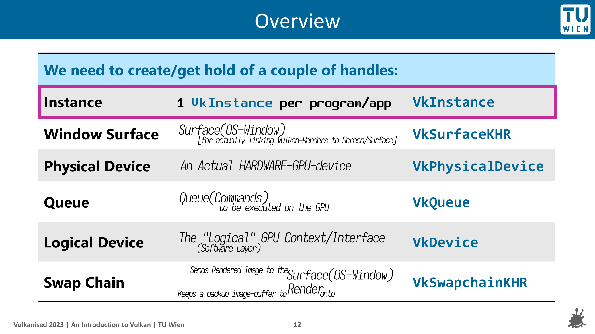

![svg1]()
Chapter 0: Prerequisites 📹
📖 Suggested Reading (before embarking on this journey)
-
Brendan Galea's Vulkan C++ [Youtube Series]
- 🔗 https://www.youtube.com/watch?v=Y9U9IE0gVHA&list=PL8327DO66nu9qYVKLDmdLW_84-yE4auCR
- For now, just watch the first
3:40minutevideo 💁‍♀️- I don't recommend going down the playlist, right now, tho.
-
Alternatively:- https://paminerva.github.io/docs/LearnVulkan/01.A-Hello-Window
- Read the
1 - Introductionpart from here only 😊 [untill1.2. Why Vulkan?end] - 😉 00-Introduction-and-prerequisites.pdf
- 😜 01.A-Hello-Window.pdf
- Read the
-
Alternatively:- you can give this page a try too:-
- https://vkdoc.net/chapters/fundamentals
- that is, if you are into "official formal-documentation" [i sure am not....]
🙋🏻‍♀️ The 5 Questions
-
1️⃣ What is
Vulkan? ....🤔.... WhyVulkan?- 🔗 Suggested Reading 2:-
p.a.minerva
- 🔗 Suggested Reading 2:-
-
2️⃣ Why should 'you' learn/use
Vulkan?- 5-10% Faster
- More Control
- Lower Level API
- You can ask and know 'what actuaaallyyy happens under the hood of the gpu?'
-
3️⃣ Why is this Important?
- Well if you are planning on becoming a game dev, then yeah, this kinda is important!
- otherwise, if you are just here for CreatingShaders:-
OpenGLis fine enoughShader Enthusiast:-https://www.shadertoy.com/- https://www.youtube.com/playlist?list=PL9Zb80ovNLWGRFZVL4LcckTWnEGN73dFS
- https://www.youtube.com/playlist?list=PLGmrMu-IwbguU_nY2egTFmlg691DN7uE5
- https://www.youtube.com/playlist?list=PLCAFZV4XJzP-jGbTke6Bd3PNDpP1AbIKo
- https://www.youtube.com/playlist?list=PLGmrMu-IwbgtMxMiV3x4IrHPlPmg7FD-P
- https://www.youtube.com/watch?v=5J-0sy2pu_8&t=357s&pp=ygUVc2hhZGVyVG95IHJheW1hcmNoaW5n
- https://www.youtube.com/watch?v=khblXafu7iA&pp=ygUJc2hhZGVyVG95
Making an App/UI :-doing everything withOpenGL-> would be just fine
-
4️⃣ When will 'you' need
vulkan?- kinda never -> unless you have grown tired of OpenGL
- kinda yes -> when you wanna understand "How the heck does the GPU Work?"
- but yes, Big AAA games would need
vulkanfor even that last 5-10% performance
- but yes, Big AAA games would need
-
5️⃣ How does
vulkanwork?- Rest of this entire guide is dedicated to answer this question 😊
1. 🫳 grab vulkan-sdk, cmake, amGHOST
-
if you don't have
vscode&C++ Compiler- ➡️🔗 4.guide.CH0.vscode.md
- ➡️🔗 4.guide.CH0.vscode.md
-
📥 https://vulkan.lunarg.com/sdk/home
- make sure
VULKAN_SDK&VK_SDK_PATHenvironment variables are set - restart vscode after installing
- make sure
-
📥 https://cmake.org/download/
-
📝
Intro/Tutorials- https://enccs.github.io/intro-cmake/hello-cmake/
OR: Watch 6/7 videos from this playlist:-
-
restart vscode after installing
-
📜 REY_DOCs- This is how it usually looks. Read through it 💁‍♀️.
- The app that we will make using
amGHOST, will need to have these commands
cmake_minimum_required(VERSION 3.25 FATAL_ERROR) project("idk_PROJECT" VERSION 0.1) set(CMAKE_CXX_STANDARD 23) set(CMAKE_CXX_STANDARD_REQUIRED ON) # -------------------- set(SRC "main.cpp" ) set(INC ${CMAKE_CURRENT_SOURCE_DIR} ) # -------------------- # -------------------- # set_source_files_properties(main.cpp PROPERTIES COMPILE_FLAGS "/P /C") # Output Preprocessed File add_executable (idk ${SRC}) target_include_directories (idk PUBLIC ${INC}) # ------amGHOST------- add_subdirectory (amGHOST) target_link_libraries (idk PUBLIC amGHOST) # ------install------- install(TARGETS idk DESTINATION ${CMAKE_CURRENT_SOURCE_DIR})
-
-
amGHOST- amateur's Generic Handy Operating System Toolkit
- [secretly inspired by
blender's GHOSTxP 😜]
- [secretly inspired by
git clone -b win32-intro https://github.com/REYNEP/amGHOST- Open it with VSCode
F1-->CMake: ConfigureF1-->CMake: BuildF1-->CMake: Install-->.insalldir- check's amGHOST's Usage Example inside
amGHOST/README.mdOption 1:- usecmakefor your project too.... usingadd_subdirectory(amGHOST)Option 2:- uselibamGHOST.libafter installing &#include amGHOST/<header>
- just copy paste amGHOST's Usage Example into a
main.cppfor your program#include "amGHOST/amGHOST_System.hh" int main(int argumentCount, char* argumentVector[]) { amGHOST_System::create_system(); // initializes amG_HEART amGHOST_Window* W = amG_HEART->new_window_interface(); W->create(L"Whatever", 0, 0, 500, 600); REY::cin.get(); // wait for terminal input W->destroy(); }- [shorter than
readme ex. 1] - now you shall have a OS-Window 😊
- [shorter than
- amateur's Generic Handy Operating System Toolkit
-
Viewing these readmes in a Nice Way
- https://github.com/REYNEP/amGHOST/blob/main/amVK_Guide/P1/bkup/style-bkup.less
vscode extension:- shd101wyy.markdown-preview-enhancedscoop install princexmlvscode F1:- Markdown Preview Enhanced:- Customize CSS (Global)- Paste my
style-bkup.less vscode F1:- Markdown Preview Enhanced:- Open Preview 💁‍♀️
![]()
Chapter 1: VkInstance

0. amVK wrap 🌯
#include "amVK_Instance.hh"
// TwT
amVK_Instance::AppInfo // VkApplicationInfo [public]
amVK_Instance::CI // VkInstanceCreateInfo [public]
// You can modify these as you wish 😊
amVK_Instance::CreateInstance(); // initializes amVK_HEART
1. Notes on Notes
-
https://vkdoc.net/man/VkApplicationInfo
-
.sType:-- 🟪 almost every
VkStructis gonna have this field/member 💁‍♀️ - must be
VK_STRUCTURE_TYPE_APPLICATION_INFOforVkApplicationInfoVK_STRUCTURE_TYPE_INSTANCE_CREATE_INFOforVkInstanceCreateInfoVK_STRUCTURE_TYPE_DEVICE_CREATE_INFOforVkDeviceCreateInfo- and so on... (you get the idea)
- 🟪 almost every
-
.pNext:-- 🟪 almost every
VkStructis gonna have this field/member 💁‍♀️ - Mostly
NULL💁‍♀️ - but it has an interesting use case:-
- https://vkdoc.net/man/VkDeviceCreateInfo#VUID-VkDeviceCreateInfo-pNext-pNext
- you can kinda like pass in pointer to
VkStructEXTwhen you need those Extension features 💁‍♀️
- 🟪 almost every
-
.pApplicationName--> null-terminated UTF-8 string -
.applicationVersion-->uint32- you as the developer of your application can set it to arbitrarily anything you want it to 💁‍♀️, say
- 101
- 005
- 1
- 2025
- you as the developer of your application can set it to arbitrarily anything you want it to 💁‍♀️, say
-
.pEngineName--> null-terminated UTF-8 string -
.engineVersion-->uint32 -
.apiVersion-->uint32
-
-
again.... yeah, do remember to check the
Valid Usagesection 😉
-
There's a alternative to vkdoc.net
- https://github.com/ivirtex/vulkan-hover-docs/tree/master/vscode_ext/vulkan_man_md_pages/VkInstanceCreateFlagBits.md
- it is also available as an extension in
vscode-->ivirtex.vulkan-hover-docs
-
Symbols
- 🟪:- kinda means nothing
- i kinda used to like make it look like a bit pattern-ish iguess 🥴🫢
- 🟨:- "Yellow Card"
- it means, you don't need to hesitate about this thingy right now 💁‍♀️ we will focus on this element later 🤝
- 🟧:- "Orange Card"
- it means, this element is probably never gonna be 'necessary' for vulkan applications 💁‍♀️
- it means, this element is probably never gonna be 'necessary' for vulkan applications 💁‍♀️
- [The extended list can be found in 🔗 Chapter3.14]
- 🟪:- kinda means nothing
2. 🐛 ️ VkApplicationInfo
-
https://vkdoc.net/man/VkApplicationInfo
.sType🟪VK_STRUCTURE_TYPE_APPLICATION_INFO.pNext🟪NULL.pApplicationName--> null-terminated UTF-8 string.applicationVersion🏷️uint32.pEngineName--> null-terminated UTF-8 string.engineVersion🏷️uint32.apiVersion🏷️uint32
-
📜 REY_DOCs
.apiVersionlowest Vulkan API versionYour APP "can run" on.- [*clarification needed:- lowest or highest]
.engineVersion- and the
versionof theengine(if any) used to create "Your APP". - This can help
vulkan driver implementationsto perform "ad-hoc" optimizations.- e.g. like if a Triple-A [AAA] game used, for say,
Unreal Engine Version 4.1.smthidk 🤷‍♀️
- e.g. like if a Triple-A [AAA] game used, for say,
- and the
- REFs:- 1. minerva
-
yes, what are you waiting for 🤷‍♀️ go go, shooo.... (🤝)
#include <vulkan/vulkan.h>- take an instance of that
Struct-> Fill it up [😉][have the vkdoc.net as assist]
3. 🐛 ️ VkInstanceCreateInfo
- https://vkdoc.net/man/VkInstanceCreateInfo
.sType🟪VK_STRUCTURE_TYPE_INSTANCE_CREATE_INFO.pNext🪐NULL- 🪐: "Extensions"
- Some intresting ones actually 😉 (will talk about them later)
.flags🏳️VkInstanceCreateFlagBits.pApplicationInfo🟪 💁‍♀️ Duh!.ppEnabledLayerNames🟨 ChapterZZZ.ppEnabledExtensionNames🟨 Chapter4.2- Don't hesitate about
EnabledLayer&EnabledExtensionsright now- come back and add them when you need to 😊
- This is what I would mean, when i would point smth to a later chapter
- I will add the 🟨 ("Yellow Card") too!
- Don't hesitate about
-
📜 REY_DOCs
- Nothing that I need to add, in this section
- Tho if this section gets big, I will create a separate
.mdfile for that thingy
4. A 😠Cool vscode / visual-studio extension if you want 💁‍♀️
vscode extension name-->ivirtex.vulkan-hover-docs
5. 🏷️ VkInstance m_instance = nullptr;
6. 📦 vkCreateInstance(CI, nullptr, &m_instance)
-
https://vkdoc.net/man/vkCreateInstance
param pCreateInfo🟪 💁‍♀️ Duh!param pAllocator🟪nullptrparam pInstance🟪&m_instance
-
📜 REY_DOCs
param pAllocatorVkAllocationCallbacks🟨 ChapterZZZ- I will make a chapter on this 🤠[https://vkdoc.net/chapters/memory#memory-allocation]
- Vulkan provides applications the opportunity to perform host memory allocations
- If this feature is not used
- the implementation will perform its own memory allocations.
- Since most memory allocations are off the critical path, this is not meant as a performance feature. Rather, this can be useful for certain embedded systems, for debugging purposes (e.g. putting a guard page after all host allocations), or for memory allocation logging.
7. 🚨 Error Handling / Checking / 🪵 Logging
- check out my
amVK_log.hh- uses REY_LoggerNUtils inside amGHOST
- has a simple
stackTracer()that i basically stripped from blender3D codebase 🥴
8. 📽️ So far, The result :- 4.guide.chapter1.hh
9. The Unused ones
vkEnumerateInstanceExtensionProperties()--> 🟨 Chapter4.2Add_InstanceEXT_ToEnable(const char* extName)--> 🟨 Chapter4.2- this is a amVK/REY Custom Function
Chapter 2: VkDevice

Take a look into this awesome slide from slide-26 onwards
...to understand what each of these steps above "feel like"/mean/"how to imagine them".
*slide = Vulkanised 2023 Tutorial Part 1
0. amVK wrap 🌯
#include "amVK_Instance.hh"
#include "amVK_DeviceQueues.hh"
#include "amVK_Device.hh"
// TwT
REY_LOG("");
amVK_Instance::EnumeratePhysicalDevices();
amVK_GPUProps *GPUProps = amVK_InstanceProps::GetARandom_GPU();
GPUProps->GetPhysicalDeviceQueueFamilyProperties();
GPUProps->REY_CategorizeQueueFamilies();
amVK_Device* D = new amVK_Device(GPUProps);
D->CI // VkDeviceCreateInfo [public]
D->Queues // amVK_DeviceQueues [public] [take a look inside 😜]
D->add_1D_QFAMs_QCount_USER() // amVK_DeviceQueues
D->CreateDevice(1); // param1 = GraphicsQueueCount =
D->GetDeviceQueues(); // see:- Queues.TheArrays 😜
D->Queues.GraphicsQ(0) // returns Queues.TheArrays.Graphics[0]
1. 📦 vkCreateDevice()
- https://vkdoc.net/man/vkCreateDevice
physicalDevice🟪HardwareGPU_List[0]/amVK_InstanceProps::GetARandom_GPU()- Enumerate 🟨 Chapter2.3
- How to 'choose'? 🟨 Chapter2.End
pCreateInfo🟪💁‍♀️- 🔗 SubChapter 2
pAllocator🟨 ChapterZZZpDevice↩️📦&m_Device- ↩️📦: "Returned by vkFunc()"
-
📽️ So far, The result:-
2. 🐛 ️ VkDeviceCreateInfo
-
https://vkdoc.net/man/VkDeviceCreateInfo
-
.sType🟪VK_STRUCTURE_TYPE_DEVICE_CREATE_INFO -
.pNext🪐nullptr- 🪠almost any EXT that you are gonna enable.... is prolly gonna end up being passed on here.... tied to
VkDeviceCI💁‍♀️
- 🪠almost any EXT that you are gonna enable.... is prolly gonna end up being passed on here.... tied to
-
.flags🏴0- 🏴: "No Flag"
VkSpecsSays:-reserved for future use
-
.pQueueCreateInfos🔗 SubChapter 5- Multiple Queue Create Infos:- 🟨 Chapter2.8
-
.ppEnabledLayerNamesâš ️ deprecated [by Vulkan] -
.ppEnabledExtensionNames🟨 Chapter4.2 -
.pEnabledFeatures🟨 ChapterZZZ- This should be really interesting
-
-
📜 REY_DOCs
.pQueueCreateInfos-> yes, you 'can' pass multiple 😉- Sometimes there will be
.zzzCreateInfoCount&.pZZZCreateInfos- So you could like pass in an array/vector
- You will see this in lots of other places
-
📽️ So far, The result:-
3. 📜 vkEnumeratePhysicalDevices()
- https://vkdoc.net/man/vkEnumeratePhysicalDevices
-
</> TheCodeuint32_t deviceCount = 0; // [implicit valid usage]:- must be 0 [if 3rd-param = nullptr] vkEnumeratePhysicalDevices(m_instance, &deviceCount, nullptr); // it's kinda like the function is 'output-ing into' deviceCount std::vector<VkPhysicalDevice> HardwareGPU_List(gpuCount); // best to save this as a class member variable vkEnumeratePhysicalDevices(m_instance, &deviceCount, HardwareGPU_List.data()); // note: it does return VkResult return_code👀 Visualization / [See it] / JSON Printing:- 4.guide.chapter2.1.json.hh📽️ So far, The result:- 4.guide.chapter2.1.midway.hh🔗 GitHub:- amVK_GPUProps.hh
4. 🧊 amVK_InstanceProps::GetARandom_GPU()
</> TheCode 🔗 GITHUB amVK_InstanceProps.hh#L39
5. 🐛 ️ VkDeviceQueueCreateInfo - 'The Real Deal'
-
https://vkdoc.net/man/VkDeviceQueueCreateInfo
-
.sType🟪VK_STRUCTURE_TYPE_DEVICE_QUEUE_CREATE_INFO -
.pNext🪐nullptr- 🪠2 Extensions 😉 (will talk about them later)
-
.flags🏳️0- 🪠https://vkdoc.net/man/VkDeviceQueueCreateFlagBits | ivirtex-github
- 🚩: "Only Option"
VK_DEVICE_QUEUE_CREATE_PROTECTED_BIT[Protected Queue]
-
.queueFamilyIndex🔗 Next 3 SubChaptersvkGetPhysicalDeviceQueueFamilyProperties()--> look for a QueueFamily that supportsVK_QUEUE_GRAPHICS_BIT
-
.queueCount🟪1[Specify, how many you need 💁‍♀️]
-
.pQueuePriorities--> yes, this can be multiple "Priorities" 🥴 [idk yet why tho]- Range = (0.0 -> 1.0) [inclusive]
- Within the same device, queues with higher priority may be allotted more processing time than queues with lower priority.
-
-
📽️ So far, The result:-- We are gonna take a Big Leap & Start connecting to 🔗
GITHUB - amVK_DeviceQCI.hh
- We are gonna take a Big Leap & Start connecting to 🔗
6. 📜 vkGetPhysicalDeviceQueueFamilyProperties()
-
https://vkdoc.net/man/vkGetPhysicalDeviceQueueFamilyProperties
-
📜 REY_DOCs
- a GPU can have "multiple QueueFamilies"
- a
QueueFamilymight supportVK_QUEUE_GRAPHICS_BIT - another
QueueFamilymight supportVK_QUEUE_COMPUTE_BIT - another
QueueFamilymight supportVK_QUEUE_TRANSFER_BIT - another
QueueFamilymight supportVK_QUEUE_VIDEO_ENCODE_BIT_KHR - another
QueueFamilymight support a-mixture of multiple - talking about this in -> 🔗 Next SubChapter
- a
- a GPU can have "multiple QueueFamilies"
-
</> TheCode[OldWay]#define GPUs amVK_InstanceProps::s_HardwareGPU_List #define amVK_2D_GPUs_QFAMs amVK_Instance::s_HardwareGPU_QFamProps_List2D static inline REY_Array<REY_Array<VkQueueFamilyProperties>> s_HardwareGPU_QFamProps_List2D; // REY_Array --> "REY_LoggerNUtils/REY_Utils.hh" 😄 // 1 System/PC // multiple GPU // multiple QFamPropsstatic inline void GetPhysicalDeviceQueueFamilyProperties(void) { amVK_2D_GPUs_QFAMs.reserve(GPUs.n); // malloc using "new" keyword for ( uint32_t k = 0; k < GPUs.n; k++ ) // for each GPU { REY_Array<VkQueueFamilyProperties> *k_QFamProps = &amVK_2D_GPUs_QFAMs.data[k]; uint32_t QFamCount = 0; vkGetPhysicalDeviceQueueFamilyProperties(GPUs[k], &QFamCount, nullptr); k_QFamProps->n = QFamCount; k_QFamProps->data = new VkQueueFamilyProperties[QFamCount]; vkGetPhysicalDeviceQueueFamilyProperties(GPUs[k], &k_QFamProps->n, k_QFamProps->data); } #undef GPUs }👀 Visualization / [See it] / JSON Printing:- 4.guide.chapter2.5.json.hh- Check the 3070 JSON by REY
📽️ So far, The result:- [OldWay] 4.guide.chapter2.5.amVK_Instance.hh- Compare to -> 4.guide.chapter2.1.midway.hh
2DArray_QFAM_Propspart & below were added only compared toChapter2.1.
- Compare to -> 4.guide.chapter2.1.midway.hh
-
📽️ So far, The result:- 🔗GITHUB[NewWay]
7. 🏷️ VkQueueFamilyProperties
- https://vkdoc.net/man/VkQueueFamilyProperties
-
📜 REY_DOCs
.queueFlags- we are gonna choose a
QCI.queueFamilyIndexbased on these flags - primarily, for the least, we wanna choose a
QueueFamilythat supportsVK_QUEUE_GRAPHICS_BIT - all kinds of amazing things can be done using
VK_QUEUE_COMPUTE_BITVK_QUEUE_TRANSFER_BITVK_QUEUE_VIDEO_ENCODE_BIT_KHR
- we are gonna choose a
.queueCount- yes there is a limit to 'how many
Queueswe are allowed to work with' 🥴
- yes there is a limit to 'how many
.timestampValidBits.minImageTransferGranularity
8. VkDeviceQCI.queueFamilyIndex [OldWay]
🯠Task- is to choose a
QueueFamilythat supportsVK_QUEUE_GRAPHICS_BIT😉 - (if you've followed on so far -> this should be easy 😉)
- is to choose a
-
</> amVK_Device.hhvoid amVK_Device::Select_QFAM_GRAPHICS(void) { if (!amVK_Instance::called_GetPhysicalDeviceQueueFamilyProperties) { amVK_Instance::EnumeratePhysicalDevices(); } if (!amVK_Instance::called_GetPhysicalDeviceQueueFamilyProperties) { amVK_Instance::GetPhysicalDeviceQueueFamilyProperties(); } amVK_Instance::amVK_PhysicalDevice_Index index = amVK_HEART->GetARandom_PhysicalDevice_amVK_Index(); this->QCI.Default.queueFamilyIndex = amVK_Instance::ChooseAQueueFamily(VK_QUEUE_GRAPHICS_BIT, index); // If you wanna see the implementation for this function }📽️ So far, The result:- OldWay (Don't spend time inside this, more than 1 minute)📽️ So far, The result:- NewWay 🔗GITHUB(NewWay is like 10x more organized and easier to understand)
9. 🧊 REY_CategorizeQueueFamilies() [NewWay]
</> TheCode 🔗 GITHUB
amVK_GPUProps.hh#L50
amVK_GPUProps.cpp#L260
10. back to 📦 vkCreateDevice() finally calling it 😊
- https://vkdoc.net/man/VkDeviceCreateInfo
-
</> main.cppamVK_Device* D = new amVK_Device(GPUProps); D->CI // VkDeviceCreateInfo [public] D->Queues // amVK_DeviceQueues [public] [take a look inside 😜] D->add_1D_QFAMs_QCount_USER() // amVK_DeviceQueues D->CreateDevice(1); // param1 = GraphicsQueueCount = 1 D->GetDeviceQueues(); // see:- Queues.TheArrays 😜 D->Queues.GraphicsQ(0) // returns Queues.TheArrays.Graphics[0]- Think of this as a PSeudoCode / or / check out my code if you wanna
CreateInfo=> By default has initial values insideamVK_Device
11. 🧊 amVK_DeviceQueues
🔗 amVK_DeviceQueues.hh
🟪 eXtras / TheEnd
11. multiple VkDeviceCreateInfo.pQueueCreateInfos
- VUID-VkDeviceCreateInfo-queueFamilyIndex-02802
-
The
.queueFamilyIndexmember of each element of.pQueueCreateInfosmust be unique 💁‍♀️
-
So, randomly
push_back()ing without any kinda safety ➡️ kinda feels absurd. 💁‍♀️ doesn't it? .... e.g./* ============ REY_LoggerNUtils::REY_Utils.hh ============ */ REY_ArrayDYN<VkDeviceQueueCreateInfo> Array = REY_ArrayDYN<VkDeviceQueueCreateInfo>(2); REY_ARRAY_PUSH_BACK(Array) = this->Default_QCI; REY_ARRAY_PUSH_BACK(Array) = Your_QCI;-
[OldWay]:- amVK_DeviceQCI.hh
-
-
So what i did is:- to introduce a
QCountarray as perQFamily💁‍♀️-
[NewWay]:- amVK_DeviceQueues.hh#L56
-
-
& then have a function for the user to increase the
QCount-
[NewWay]:- 🔗
GITHUB_WIP-->amVK_Device::add_1D_QFAMs_QCount_USER()
-
-
-
OldWay 📆
March, 2025class amVK_InstancePropsEnumeratePhysicalDevices()GetPhysicalDeviceQueueFamilyProperties()
-
(Don't spend time inside this, more than 1 minute)
-
https://github.com/REYNEP/amGHOST/tree/3e44b982902a3f3fa4ac584aefb19da3d4cdfcc6
-
NewWay 📆
May, 2025- 🔗
GITHUB(NewWay is like 10x more organized and easier to understand)
- 🔗
-
vkGetPhysicalDeviceProperties()🟨 Chapter11 -
GetFeatures 🟨 Chapter11
-
MemoryTypes 🟨 Chapter11
-
Guide on
amVK_Array🟨 Chapter6.6
Chapter 3: Common Patterns: if someone missed to catch it yet 😉
Object Vk VkInstance
Types Vk VkInstanceCreateInfo
Funcs vk vkCreateInstance()
Enums VK_ VK_STRUCTURE_TYPE_INSTANCE_CREATE_INFO
Extensions
KHR:- Khronos authored,
EXT:- multi-company authored
Creating "VkZZZ" object
1. take `VkZZZCreateInfo` --> fill it up
2. call `vkCreateZZZ()`
3. also `vkDestroyZZZ()` before closing your app
4. Some objects get "allocated" rather than "created"
`VkZZZAllocateInfo` --> `vkAllocateZZZ` --> `vkFreeZZZ`
5. Sometimes there will be `.zzzCreateInfoCount` & `.pZZZCreateInfos`
e.g. `.queueCreateInfoCount` & `.pQueueCreateInfos``
-> So you could like pass in an array/vector
-> You will see this in lots of other places
Getting List/Properties
6. vkEnumerateZZZ() --> \see `[Chapter2.1.] vkEnumeratePhysicalDevices()` example
-- | -- | -- | ----------------------------------------------------------------------------
-
🟪 almost every
VkStructis gonna have these 3 field/member 💁‍♀️sType:-- It may seem somewhat redundant, but this information can be useful for the
vulkan-loaderand actualgpu-driver-implementationsto know what type of structure was passed in throughpNext.
- It may seem somewhat redundant, but this information can be useful for the
pNext:-- allows to create a linked list between structures.
- It is mostly used when dealing with extensions that expose new structures to provide additional information to the
vulkan-loader,debugging-validation-layers, andgpu-driver-implementations.- i.e. they can use the
pNext->stypefield to know what's ahead in the linked list
- i.e. they can use the
.flags:-- this one goes mostly ignored / set to
0
- this one goes mostly ignored / set to
-
.pQueueCreateInfos:- yes, you 'can' pass multiple 😉- Sometimes there will be
.zzzCreateInfoCount&.pZZZCreateInfos- So you could like pass in an array/vector
- You will see this in lots of other places
- Sometimes there will be
-- | -- | -- | ----------------------------------------------------------------------------
-
CreateInfo StartingPoint
VkRenderPassCreateInfo CI = { .sType = VK_STRUCTURE_TYPE_SWAPCHAIN_CREATE_INFO_KHR, .pNext = nullptr, .flags = 0 };
10. Do remember to check the `Valid Usage` section within each manual-page
-
Getting/Enumerating VkObject list 💁‍♀️
uint32_t deviceCount = 0; // [implicit valid usage]:- must be 0 [if 3rd-param = nullptr] vkEnumeratePhysicalDevices(m_instance, &deviceCount, nullptr); // it's kinda like the function is 'output-ing into' deviceCount std::vector<VkPhysicalDevice> HardwareGPU_List(gpuCount); // best to save this as a class member variable vkEnumeratePhysicalDevices(m_instance, &deviceCount, HardwareGPU_List.data()); // note: it does return VkResult return_code
-- | -- | -- | ----------------------------------------------------------------------------
Symbols:--
🟪:- kinda means nothing
- i kinda used to like make it look like a bit pattern-ish iguess 🥴🫢
- 🟪💁‍♀️: "Pretty Obvious"
- i kinda used to like make it look like a bit pattern-ish iguess 🥴🫢
-
🟨:- "Yellow Card"
- it means, you don't need to hesitate about this thingy right now 💁‍♀️ we will focus on this element later 🤝
1. ChapterZZZ => Unknown WIP/TBD Chapter 2. Chapter2.4 => If LATER-CHAPTER => Dont hesitate right now, Do this when you each that LATER-Chapter If PREV-CHAPTER => You can go back and check 😛 🔗 `SurfCAP.currentTransform` 🔗 Chapter2.4 -
🟧:- "Orange Card"
- it means, this element is probably never gonna be 'necessary' for vulkan applications 💁‍♀️
- it means, this element is probably never gonna be 'necessary' for vulkan applications 💁‍♀️
-
🪐: "Extensions"
- Same as 🟨 "Yellow Card". But marks a little bit more, that, "Here goes Extension" Features
- Same as 🟨 "Yellow Card". But marks a little bit more, that, "Here goes Extension" Features
-
🔠: "Options"
- Sometimes you'd "Must Need" to choose between a few options
- Sometimes you'd "Must Need" to choose between a few options
-
🏳️: "I Lose, You Win!" / General Flag Icon / Sometimes means -> "Lots of Flags" / IDK / Didn't check [IDC]
-
ğŸŒ: "Nice/Important Flags"
-
🚩: "One Flag" [IDC]
-
🏴: "No Flag" [IDC]
-
âš ️: "Deprecated Feature" / "Other Kinds of Warnings" / I will try to name when using this emoji/sign
-
🏷️: "Type"
-
🟨 ChapterZZZ
-
🔗 Chapter2.1
-
🔗
GITHUB_WIP -
📋🔄 Chapter2.1
vkEnumeratePhysicalDevices()- it means, Implement Exactly like in Chapter2.1 😉
-
ℹ️: "Create Info"
-
🌯:
amVK_Wrap -
↩️📦: "Object Getting return by Vulkan Function"
-
📜 REY_DOCs- Actual Notes
- Mostly, vkdoc.net documentation is good enough. But if I wanna add smth extra, it goes here
- This section might get big & robust sometimes 🤝
-
</> TheCode -
📽️ So far, The result- 📝:- "File Icon"
-
👀 Visualization / [See it] / JSON Printing
-
ğŸ”¬ğŸ› ️ 2DriverIMPL- To The People Who are gonna Implement the Driver
- Other Keyword:- "DriverGurantee"
-
-- | -- | -- | ----------------------------------------------------------------------------
-
Emojis List
- 🟪 🟨 🟧 🪠🔠â¡ï¸ 🏷️ 📝 ℹ️ ğŸ“¥ 🌋 🧊
- 🟪💁‍♀️
- ↩️📦
- 🔗 SubChapter 2
- 🔗 Next SubChapter
- 🔗 Chapter2.1
- 🟨 ChapterZZZ
- 📋🔄 Chapter2.1
- 🔗
GITHUB_WIP -
↩️ Return Codes
-
📜 REY_DOCs
-
</> TheCode -
</> main.cpp -
📽️ So far, The result -
ğŸ”¬ğŸ› ️ 2DriverIMPL -
👀 Visualization / [See it] / JSON Printing
-
Templates Below
-
https://vkdoc.net/man/VkGraphicsPipelineCreateInfo
.sType🟪VK_STRUCTURE_TYPE_GRAPHICS_PIPELINE_CREATE_INFO.pNext🪐nullptr.flags🏳️0
-
https://vkdoc.net/man/VkGraphicsPipelineCreateInfo
-
.sType🟪VK_STRUCTURE_TYPE_GRAPHICS_PIPELINE_CREATE_INFO -
.pNext🪐nullptr -
.flags🏳️VkBufferCreateFlagBits- https://vkdoc.net/man/VkBufferCreateFlagBits | ivirtex-github
SPARSE🟨 ChapterZZZ
- https://vkdoc.net/man/VkBufferCreateFlagBits | ivirtex-github
-
.pSwapchains🟪💁‍♀️ -
.pNext🪐nullptr- 🪐
VkDeviceGroupCommandBufferBeginInfo - 🪠Maybe some interesting extensions, idk
- 🪐
-
.flags🔍VkCommandBufferUsageFlagBits- https://vkdoc.net/man/VkCommandBufferUsageFlagBits | ivirtex-github
- 🔍
ONE_TIME_SUBMIT - 🔍
RENDER_PASS_CONTINUE[secondary command buffer] - 🔍
SIMULTANEOUS_USE
- 🔍
- https://vkdoc.net/man/VkCommandBufferUsageFlagBits | ivirtex-github
-
-
-
Extra Emojis
📟📇
🎚️🎌🏳️
🔌🚀
🚫📜
âš ï¸ğŸ§“
☢️🧨
☢️💀
âš ï¸ğŸšï¸ -
Number BLocks
1️⃣
2️⃣
3️⃣
4️⃣
5️⃣
6️⃣
7️⃣
8️⃣
9️⃣
🔟
1️⃣1️⃣
1️⃣2️⃣
1️⃣3️⃣
1️⃣4️⃣
1️⃣5️⃣
1️⃣6️⃣
1️⃣7️⃣
1️⃣8️⃣
1️⃣9️⃣
2️⃣0️⃣ -
Possible Function Naming Verbs-Emojis
1. query_SurfCap 🕵️♂️ 2. update_SurfCap 🔄 3. load_SurfCap 📥 4. acquire_SurfCap 🔗 5. get_SurfCap 📤 6. grab_SurfCap 👠7. snag_SurfCap 🣠(Quick pull) 8. pluck_SurfCap ✂️ (Precision) 9. selected_gpu_surfCap 🯠(Targeted) Emphasizes the GPU_Index selection. 10. current_surfCap ⏳ (Stateful) 11. yoink_SurfCap 🦄 (Playful) VkSurfaceCapabilitiesKHR* cap = yoink_SurfCap(); 12. procure_SurfCap 🕴️ (Formal) procure_SurfCap() → Sounds like a business transaction! 13. obtain_SurfCap 🆠(Success) 14. collect_SurfCap 📚 (Gathering) 15. retrieve_SurfCap 🯠(Accuracy) 16. sync_SurfCap 🔄 (Sync State) 17. pull_SurfCap 🪢 (Tug-of-war) 18. refresh_SurfCap 💫 (Update) 19. reload_SurfCap ♻️ (Reload) 20. populate_SurfCap 🌱 (Fill Data) 21. enumerate_SurfCap 📇 (Listing) 22. summon_SurfCap 🧙♂️ (Magic) 23. harvest_SurfCap 🌾 (Farm) 24. fish_SurfCap 🣠(Fishing) 25. dial in 🎛️ (Precision) 26. shape up 🌟 (Polishing) 27. rig 🐛 ️ (Hacky) 28. tailor 👗 (Custom-fit) 29. access_SurfCap 🔠30. craft 🧙♂️ (Artisan) 31. surfCap 📋 (property-style) 32. surfCap_ptr 🯠(or surfCapRef) -
Extra Emojis
#!/usr/bin/env python3 # 🮠Ultimate Vulkan Emoji Guide (1-35) vulkan_steps = [ # Core Setup (Original 1-5) "1. 🌠Instance Creation", "2. 🖥️ Physical Device Selection", "3. ⚙️ Logical Device Setup", "4. 🨠Graphics Pipeline", "5. 🖼️ SwapChain Initialization", # Resource Management (Original 6-10) "6. 🗄️ Buffer Allocation", "7. 🧠Memory Binding", "8. 🖌️ Descriptor Sets", "9. 📦 Image Creation", "10. 🮠Command Pools", # Execution Flow (Original 11-12) "11. 📜 Command Buffers", "12. ⏱️ Synchronization", # Debugging (Original 13-14) "13. 🔠Validation Layers", "14. 🛠Debug Messenger", # Advanced Features (Original 15-17) "15. 🌌 Ray Tracing", "16. 🤖 Compute Pipeline", "17. 🧵 Multi-Threading", # Cleanup (Original 18-20) "18. 🧹 Resource Destruction", "19. 💥 Device Cleanup", "20. 🚀 Instance Shutdown", # New Additions (21-35) "21. 🧊 Device Memory", "22. 🔄 Memory Barriers", "23. 📊 Buffer Views", "24. 🎛️ Pipeline Layout", "25. 🔮 Shader Modules", "26. 🧩 Pipeline Cache", "27. 🆠Render Passes", "28. 🖌️ Dynamic Rendering", "29. 🌠Multi-View Rendering", "30. ⏳ Timeline Semaphores", "31. 🚦 Fences", "32. 📡 Debug Markers", "33. 📈 Performance Queries", "34. 🌀 Compute Dispatches", "35. 🚀 Acceleration Structures" ]#!/usr/bin/env python3 # 🆠Ultimate Vulkan Emoji Cheatsheet (50+ Concepts) vulkan_concepts = { # === Core Setup === "ğŸŒ": "Instance Creation (vkCreateInstance)", "🖥️": "Physical Device Selection (vkEnumeratePhysicalDevices)", "⚙️": "Logical Device (vkCreateDevice)", "📜": "Extensions/Layers (ppEnabledExtensionNames)", # === Resources === "🗄️": "Buffers (vkCreateBuffer)", "🧊": "Device Memory (vkAllocateMemory)", "📦": "Images (vkCreateImage)", "🔄": "Memory Barriers (vkCmdPipelineBarrier)", "🧶": "Image Views (vkCreateImageView)", "🧩": "Sparse Resources (VkSparseImageMemoryBind)", # === Pipeline === "🎨": "Graphics Pipeline (vkCreateGraphicsPipelines)", "🤖": "Compute Pipeline (vkCreateComputePipelines)", "🔮": "Shader Modules (vkCreateShaderModule)", "🎛️": "Pipeline Layout (vkCreatePipelineLayout)", "🧪": "Pipeline Cache (vkCreatePipelineCache)", # === Descriptors === "🖌️": "Descriptor Sets (vkAllocateDescriptorSets)", "📇": "Descriptor Pool (vkCreateDescriptorPool)", "📊": "Descriptor Set Layout (vkCreateDescriptorSetLayout)", # === Rendering === "🎆": "Render Passes (vkCreateRenderPass)", "🖼️": "Framebuffers (vkCreateFramebuffer)", "🎚️": "Dynamic Rendering (VK_KHR_dynamic_rendering)", "👁️": "Multi-View (VK_KHR_multiview)", # === Commands === "🎮": "Command Pools (vkCreateCommandPool)", "📜": "Command Buffers (vkAllocateCommandBuffers)", "⏱️": "Queue Submission (vkQueueSubmit)", # === Synchronization === "🚦": "Fences (vkCreateFence)", "⏳": "Timeline Semaphores (VK_KHR_timeline_semaphore)", "🤝": "Events (vkCreateEvent)", # === Advanced === "🌌": "Ray Tracing (VK_KHR_ray_tracing_pipeline)", "🚀": "Acceleration Structures (vkCreateAccelerationStructureKHR)", "🌀": "Mesh Shading (VK_EXT_mesh_shader)", "💫": "Task Shaders (VK_EXT_mesh_shader)", # === Debugging === "🔍": "Validation Layers (VK_LAYER_KHRONOS_validation)", "🐛": "Debug Utils (vkCreateDebugUtilsMessengerEXT)", "📡": "Debug Markers (vkCmdDebugMarkerBeginEXT)", "📈": "Performance Queries (VK_QUERY_TYPE_PERFORMANCE_QUERY_KHR)", # === Cleanup === "🧹": "Resource Destruction (vkDestroy*)", "💥": "Device Cleanup (vkDestroyDevice)", "🚀": "Instance Shutdown (vkDestroyInstance)", # === New Additions === "🔄": "Push Constants (vkCmdPushConstants)", "🎚️": "Dynamic States (VkPipelineDynamicStateCreateInfo)", "🧠": "Pipeline Derivatives (VK_PIPELINE_CREATE_DERIVATIVE_BIT)", "📌": "Specialization Constants (VkSpecializationInfo)", "ğŸŒ": "External Memory (VK_KHR_external_memory)", "🔗": "Linked GPUs (VK_KHR_device_group)" }#!/usr/bin/env python3 # 🆠Ultimate Vulkan Cheatsheet (70+ Concepts) 🆠vulkan_steps = [ # === Core Setup (1-8) === "1. 🌠Instance Creation", "2. 🖥️ Physical Device Selection", "3. ⚙️ Logical Device Setup", "4. 🔌 Device Features", "5. 📜 Extensions/Layers", "6. 🖼️ SwapChain Initialization", "7. 🌠Surface Creation", "8. 🧠Queue Families", # === Resources (9-24) === "9. 🗄️ Buffer Allocation", "10. 🧊 Device Memory", "11. 📦 Image Creation", "12. 🧶 Image Views", "13. 🔄 Memory Barriers", "14. 🧩 Sparse Resources", "15. 📊 Buffer Views", "16. 🧵 Host-Coherent Memory", "17. 🚚 Memory Transfers", "18. 🧠Staging Buffers", "19. 🔗 External Memory", "20. 🧿 Protected Memory", "21. 💿 Buffer Device Address", "22. 🏷️ Resource Naming", "23. 📠Memory Requirements", "24. 🧑‍🔧 Memory Budget", # === Pipeline (25-40) === "25. 🨠Graphics Pipeline", "26. 🤖 Compute Pipeline", "27. 🔮 Shader Modules", "28. 🎛️ Pipeline Layout", "29. 🧪 Pipeline Cache", "30. 🔄 Push Constants", "31. 🎚️ Dynamic States", "32. 📌 Specialization Constants", "33. 🧠Pipeline Derivatives", "34. 💾 Pipeline Libraries", "35. 🌀 Tessellation", "36. 💫 Geometry Shaders", "37. 🧪 Subpasses", "38. ✂️ Depth/Stencil", "39. 🌈 Blend States", "40. 🧵 Multiview Rendering", # === Commands (41-50) === "41. 🮠Command Pools", "42. 📜 Command Buffers", "43. ⏱️ Queue Submission", "44. 🔠Secondary Command Buffers", "45. 🧑‍🍳 Indirect Commands", "46. 🎛️ Device Groups", "47. 🤠Queue Priorities", "48. ⏳ Timeline Semaphores", "49. 🚦 Fences", "50. 🤠Events", # === Advanced (51-70) === "51. 🌌 Ray Tracing", "52. 🚀 Acceleration Structures", "53. 🌀 Mesh Shading", "54. 💫 Task Shading", "55. 📡 Debug Markers", "56. 📈 Performance Queries", "57. 🕵️‍♀️ Object Tracking", "58. 🧩 Bindless Resources", "59. 🚧 Pipeline Barriers", "60. 💾 Pipeline Statistics", "61. 🌠External Semaphores", "62. 🔄 Present Modes", "63. 🖌️ Dynamic Rendering", "64. 🧶 Fragment Density Maps", "65. 🌀 Variable Rate Shading", "66. 🧿 Protected Swapchains", "67. 📜 Shader Printf", "68. 🧪 Pipeline Robusness", "69. 🛡️ Validation Features", "70. 🧹 Resource Cleanup" ]
-- | -- | -- | ----------------------------------------------------------------------------
Chapter 4: VkSwapchainKHR 🪟
0. VkSwapchainCreateInfoKHR ℹ️
- https://vkdoc.net/man/VkSwapchainCreateInfoKHR
.sType🟪VK_STRUCTURE_TYPE_SWAPCHAIN_CREATE_INFO.pNext🪐nullptr.flags🏳️ ChapterZZZ.surface🏄‍♀️ Chapter4.2- 🖼️ Image options 🔗 Chapter4.4
.minImageCount.imageFormat🤝.imageColorSpace🤝.imageExtent😊.imageArrayLayers.imageUsage.imageSharingMode🟪EXCLUSIVE/CONCURRENT[Toggle]
VK_SHARING_MODE_CONCURRENT🟨 ChapterZZZ.queueFamilyIndexCount--> if using, must begreated than 1.pQueueFamilyIndices--> These two are used only if.imageSharingMode = CONCURRENTiguess
- 🧙‍♂️ Compositing Options 🔗 Chapter4.5
.preTransform:-VkSurfaceTransformFlagBitsKHR.compositeAlpha:-VkCompositeAlphaFlagBitsKHR.presentMode:-VkPresentModeKHR.clipped:-VkBool32
.oldSwapchain🟨 ChapterZZZ- 🟨 SwapchainReCration
1. amVK wrap 🌯 Part I
#include "amGHOST_VkSurfaceKHR.hh"
// TwT
REY_LOG("");
amVK_Instance::EnumerateInstanceExtensions();
amVK_Instance::addTo_1D_Instance_EXTs_Enabled("VK_KHR_surface");
amVK_Instance::addTo_1D_Instance_EXTs_Enabled(amGHOST_System::get_vulkan_os_surface_ext_name());
// amGHOST_VkSurfaceKHR::create_surface() needs that extension enabled
amVK_Instance::CreateInstance();
REY_LOG("");
VkSurfaceKHR VK_S = amGHOST_VkSurfaceKHR::create_surface(W, amVK_Instance::vk_Instance);
// another 🌯 amVK_Wrap, at the end of this file
2. VkSurfaceKHR 🏄‍♀️
Part I:- Enabling VK_KHR_surface Vulkan Extension
https://vkdoc.net/man/VkSurfaceKHR
https://vkdoc.net/extensions/VK_KHR_surface
Yaaaay, we have reached our first extension to enable
we need to enable it back in vkCreateInstance() from 🔗 Chapter1.2
-
📜
vkEnumerateInstanceExtensionProperties()- https://vkdoc.net/man/vkEnumerateInstanceExtensionProperties
- 📋🔄 Chapter2.1
- This symbol/emoji means "Implement Exactly like in Chapter2.1 😉"
-
🧊
IS_InstanceEXT_Available(const char* extName)bool amVK_InstanceProps::IS_InstanceEXT_Available(const char *extName) { for (uint32_t k = 0, lim = amVK_EXT_PROPs.n; k < lim; k++) { if (strcmp(amVK_EXT_PROPs[k].extensionName, extName) == 0) { // <cstring> return true; } } return false; } -
🧊
Add_InstanceEXT_ToEnable(const char* extName)static inline REY_ArrayDYN<char*> s_Enabled_EXTs = REY_ArrayDYN<char*>(nullptr, 0, 0); // It will be automatically allocated, resize, as we keep adding 😊 #include <string.h> void amVK_Instance::Add_InstanceEXT_ToEnable(const char* extName) { if (!amVK_InstanceProps::called_EnumerateInstanceExtensions) { amVK_InstanceProps::EnumerateInstanceExtensions(); } if (amVK_InstanceProps::IS_InstanceEXT_Available(extName)) { char *dont_lose = new char[strlen(extName)]; strcpy(dont_lose, extName); s_Enabled_EXTs.push_back(dont_lose); amVK_Instance::CI.enabledExtensionCount = s_Enabled_EXTs.neXt; amVK_Instance::CI.ppEnabledExtensionNames = s_Enabled_EXTs.data; } else { REY_LOG_notfound("Vulkan Extension:- " << extName); } }
Part II:- OS Specfic SurfaceEXT & Creating it
amVK_Instance::Add_InstanceEXT_ToEnable(amGHOST_System::get_vulkan_os_surface_ext_name());
// or
amVK_Instance::Add_InstanceEXT_ToEnable("VK_KHR_win32_surface");
// or some other surface name
Win32SurfaceCIvkCreateWin32SurfaceKHR()</> TheCodepure-virtual VkSurfaceKHR amGHOST_VkSurfaceKHR_WIN32::create(VkInstance I) { amGHOST_SystemWIN32 *heart_win32 = (amGHOST_SystemWIN32 *) amGHOST_System::heart; VkWin32SurfaceCreateInfoKHR CI = { .sType = VK_STRUCTURE_TYPE_WIN32_SURFACE_CREATE_INFO_KHR, .pNext = NULL, .flags = 0, .hinstance = heart_win32->_hInstance, .hwnd = this->W->m_hwnd // W = amGHOST_WindowWIN32 }; VkSurfaceKHR S = nullptr; VkResult return_code = vkCreateWin32SurfaceKHR(I, &CI, nullptr, &S); amVK_return_code_log( "vkCreateWin32SurfaceKHR()" ); return S; }VkXlibSurfaceCreateInfoKHR&vkCreateXlibSurfaceKHR()🐛 ️ [wip]-
📜 REY_DOCs
- you can also check
amGHOST_VkSurfaceKHR::create_surface()😉
- you can also check
-
📽️ So far, The result- 4.guide.chapter4.2.amGHOST.hh
- in the end people will just use 1 line
VkSurfaceKHR VK_S = amGHOST_VkSurfaceKHR::create_surface(amG_WindowOBJ, amVK_Instance::s_vk);
3. Naming Patterns ✏️
example naming patterns for storing all these data.... cz it's gonna get overwhelming pretty soon, pretty fast
-
Arraysclass amVK_InstanceProps { public: // Array of `HardWare amVK_1D_GPUs` connected to motherboard static inline REY_Array<VkPhysicalDevice> amVK_1D_GPUs; static inline REY_Array<REY_Array<VkQueueFamilyProperties>> amVK_2D_GPUs_QFAMs; static inline REY_Array<VkExtensionProperties> amVK_1D_InstanceEXTs; static inline REY_ArrayDYN<char*> amVK_1D_InstanceEXTs_Enabled; static inline REY_ArrayDYN<SurfaceInfo> amVK_1D_SurfaceInfos; // See Below static inline REY_Array<REY_Array<VkExtensionProperties>> amVK_2D_GPUs_EXTs; // REY_Array doesn't allocate any memory by default #define amVK_LOOP_GPUs(_var_) \ for (uint32_t _var_ = 0, lim = amVK_1D_GPUs.n; _var_ < lim; _var_++) #define amVK_LOOP_QFAMs(_k_, _var_) \ for (uint32_t _var_ = 0, lim = amVK_2D_GPUs_QFAMs[_k_].n; _var_ < lim; _var_++) }; -
ChildrenStructsclass amVK_InstanceProps { class SurfaceInfo { public: VkSurfaceKHR S = nullptr; SurfaceInfo(void) {} SurfaceInfo(VkSurfaceKHR pS) {this-> S = pS;} REY_Array<REY_Array<VkSurfaceFormatKHR>> amVK_2D_GPUs_ImageFMTs; bool called_GetPhysicalDeviceSurfaceFormatsKHR = false; void GetPhysicalDeviceSurfaceFormatsKHR(void); // amVK_2D_GPUs_ImageFMTs }; }; -
VkFuncCallsclass amVK_InstanceProps { public: static inline bool called_EnumeratePhysicalDevices = false; static inline bool called_GetPhysicalDeviceQueueFamilyProperties = false; static inline bool called_EnumerateInstanceExtensions = false; public: static void EnumeratePhysicalDevices(void); // amVK_1D_GPUs static void GetPhysicalDeviceQueueFamilyProperties(void); // amVK_2D_GPUs_QFAMs static void EnumerateInstanceExtensions(void); // amVK_1D_InstanceEXTs };
-
📜 REY_DOCs- Lots of other nice stuffs are happening inside
amVK_InstanceProps.hh
- Lots of other nice stuffs are happening inside
-
📽️ So far, The result:-
4. SwapChain Image Options 🖼️
.imageFormat + .imageColorSpace
-
vkGetPhysicalDeviceSurfaceFormatsKHR()- https://vkdoc.net/man/vkGetPhysicalDeviceSurfaceFormatsKHR
param surface
-
📋🔄 Chapter2.5
- Only difference is,
Formatsmight be a bit different as perVkSurfaceKHR 📽️ So far, The result:- 4.guide.chapter4.4.5.midway.cpp
- Only difference is,
- https://vkdoc.net/man/vkGetPhysicalDeviceSurfaceFormatsKHR
-
VkSurfaceFormatKHR📺- https://vkdoc.net/man/VkSurfaceFormatKHR
||| .format🖼️🔢 ImageFormat.colorSpace🖼️🌈 ImageColorSpace- No Other options
-
📜 REY_DOCs
- This is basically a Combo of 🖼️🔢
ImageFormat& 🖼️🌈ColorSpace- so, the gpu kinda expects you to respect these combos, when you are gonna set these into
VkSwapchainCreateInfoKHR. instead of mumbo-jumbo-ing & mixing random stufs alltogether.... - altho, even if you do so, gpu is probably gonna show you the result of WRONG COLORSPACE/IMAGEFORMATs on the screen
- so, the gpu kinda expects you to respect these combos, when you are gonna set these into
- This is basically a Combo of 🖼️🔢
- https://vkdoc.net/man/VkSurfaceFormatKHR
-
Life is Hard without Images/Visualization- So we are gonna Export to JSON/YAML
- 4.guide.chapter4.4.3.Enum2String.hh
- 4.guide.chapter4.4.3.data.jsonc
- 4.guide.chapter4.4.3.Export.cpp
- aaaaggghhhhh.... ik, the export file, looks a little bit messy. 😅 but, dw, we won't use this export code in the end, it will be refactored & organized in 🔗 Chapter4.4.6
- So we are gonna Export to JSON/YAML
.minImageCount
🖼️ + .imageExtent + .imageArrayLayers + .imageUsage
🧙‍♂️ .compositeAlpha + .preTransform
4. VkSurfaceCapabilitiesKHR
-
https://vkdoc.net/man/VkSurfaceCapabilitiesKHR
-
🖼️ Image options 🔗 Chapter4.4
.minImageCount.currentExtent- as the OS Window size changes,
SurfCapsalso change - call
vkGetPhysicalDeviceSurfaceCapabilitiesKHR()to get updatedWindowSize/SurfCaps
- as the OS Window size changes,
.maxImageArrayLayers.supportedUsageFlags
-
🧙‍♂️ Compositing Options 🔗 Chapter4.5
.supportedTransforms.supportedCompositeAlphaALPHA-Blending/Transparency/GlassEffect:- you'd have to enable blending/transparency @ OS-Level first, iguess 🤔
-
Transparency 🟨 ChapterZZZ
-
ğŸ”¬ğŸ› ️ 2DriverIMPL- This section changed the perspective a little bit. Like, what I mean is that, Official Vulkan Specs requires GPU Driver Implementations to abide by these requirements 💁‍♀️
.minImageCount:- must be at least 1.maxImageArrayLayers:- must be at least 1.supportedTransforms:- at least 1 bit must be set..supportedUsageFlags:-VK_IMAGE_USAGE_COLOR_ATTACHMENT_BITmust be included in the set.- Implementations may support additional usages.
-
-
vkGetPhysicalDeviceSurfaceCapabilitiesKHR()- https://vkdoc.net/man/vkGetPhysicalDeviceSurfaceCapabilitiesKHR
-
📜 REY_DOCs
- we add right beside the function from 🔗 Chapter4.4.1 😉
📽️ So far, The result:- 4.guide.chapter4.4.5.midway.cpp
-
Life is Hard without Images/Visualization 2- Sooooooo many things to keep track of, So here we go again
.imageSharingMode
-
VkSharingMode- https://vkdoc.net/man/VkSharingMode
- it's like a Toggle/Button ->
EXCLUSIVE/CONCURRENT
-
📽️ So far, The result:-amVK_SwapChain *SC = new amVK_SwapChain(VK_Surface); SC->CI.imageFormat = VK_FORMAT_B8G8R8A8_UNORM; SC->CI.imageColorSpace = VK_COLOR_SPACE_SRGB_NONLINEAR_KHR; SC->CI.minImageCount = amVK_InstanceProps::amVK_1D_SurfaceInfos[0].amVK_1D_GPUs_SurfCAP[0].minImageCount; SC->CI.imageExtent = amVK_InstanceProps::amVK_1D_SurfaceInfos[0].amVK_1D_GPUs_SurfCAP[0].currentExtent; SC->CI.imageArrayLayers = amVK_InstanceProps::amVK_1D_SurfaceInfos[0].amVK_1D_GPUs_SurfCAP[0].maxImageArrayLayers; // You can just use "1" too, which is guranteed by DRIVER_IMPLEMENTATION [2DriverIMPL] SC->CI.imageSharingMode = VK_SHARING_MODE_EXCLUSIVE; // `EXCLUSIVE/CONCURRENT` [Toggle] SC->CI.imageUsage = VK_IMAGE_USAGE_COLOR_ATTACHMENT_BIT; // 2DriverIMPL:- VK_IMAGE_USAGE_COLOR_ATTACHMENT_BIT is guranteed to be supported by SurfCAP
-
AbbreviationsPD-> PhysicalDeviceGPUs-> PhysicalDevicesCI-> CreateInfoQCI-> QueueCreateInfoQFAM-> QueueFamilySurfCAP-> https://vkdoc.net/man/VkSurfaceCapabilitiesKHRSurfFMT-> https://vkdoc.net/man/VkSurfaceFormatKHRSC-> SwapChain
-
VkSwapchainCreateInfoKHR
- https://vkdoc.net/man/VkSwapchainCreateInfoKHR
.flags🏳️ ChapterZZZ.surface🏄‍♀️ Chapter4.2- 🖼️ Image options 🔗 Chapter4.4
.minImageCount= 🟪😉SurfCAP.minImageCount.imageFormat= 🟪😉SurfFMT[x].format.imageColorSpace= 🟪ğŸ¤SurfFMT[x].colorSpace- Choosing a Combo 🟨 ChapterZZZ
- Compositing & ColorSpaces 🟨 ChapterZZZ
.imageExtent= 🟪😊SurfCAP.minImageCount.imageArrayLayers= 🟪1- ğŸ”¬ğŸ› ️ 2DriverIMPL Gurantee
.imageUsage->VK_IMAGE_USAGE_COLOR_ATTACHMENT_BIT- ğŸ”¬ğŸ› ️ 2DriverIMPL Gurantee
.imageSharingMode= 🟪EXCLUSIVE/CONCURRENT[Toggle]VK_SHARING_MODE_CONCURRENT🟨 ChapterZZZ- we aren't gonna use concurrent for now
.queueFamilyIndexCount->0.pQueueFamilyIndices->nullptr
5. SwapChain Compositing Options 🧙‍♂️
-
.compositeAlpha- https://vkdoc.net/man/VkCompositeAlphaFlagBitsKHR
-
📜 REY_DOCs
Options:- Don't use / Pre-multiplied / Post-multiplied / inherit from OS-native window systemRequirement:-- You would have to enable @ OS level first, to enable ALPHA/Transparency/GlassEffect for window-s/surfaces
- then after that, if you query for
vkGetPhysicalDeviceSurfaceCapabilitiesKHR()SurfCAP.supportedCompositeAlphawill change
- by default, it's prolly always gonna support
VK_COMPOSITE_ALPHA_OPAQUE_BIT_KHR- i.e. if you haven't done any mastery wizardry yet, to enable ALPHA/Transparency/GlassEffect
-
.preTransform- https://vkdoc.net/man/VkSurfaceTransformFlagBitsKHR
-
📜 REY_DOCs
- 🔗
SurfCAP.currentTransform - you should probably log it if
currentTransformisn'tVK_SURFACE_TRANSFORM_IDENTITY_BIT_KHR
- 🔗
-
.clipped-
📜 REY_DOCs
- Setting clipped to
VK_TRUEallows the implementation to discard rendering outside of the surface area
- Setting clipped to
-
-
.presentMode🏷️VkPresentModeKHR- https://vkdoc.net/man/VkPresentModeKHR
-
📜 REY_DOCs
Options:- IMMEDIATE / MAILBOX / FirstInFirstOut / FIFO_Relaxed
-
.oldSwapChain-
📜 REY_DOCs
- if you are "re-creating" swapchain & you had an oldSwapchain
- We do this when
- Window Size / WindowExtent / Surface was Changed
-
-
📽ï¸
So far, The resultamVK_SwapChain *SC = new amVK_SwapChain(VK_Surface); ... Image Stuffs SC->CI.compositeAlpha = VK_COMPOSITE_ALPHA_OPAQUE_BIT_KHR; SC->CI.preTransform = amVK_InstanceProps::amVK_1D_SurfaceInfos[0].amVK_1D_GPUs_SurfCAP[0].currentTransform; SC->CI.clipped = VK_TRUE; SC->CI.presentMode = VK_PRESENT_MODE_FIFO_KHR; SC->CI.oldSwapchain = nullptr;
6. SwapChain Extension Enabling 🧩 [VK_KHR_swapchain]
-
vkEnumerateDeviceExtensionProperties()- https://vkdoc.net/man/vkEnumerateDeviceExtensionProperties
- honestly this should be named
vkEnumeratePhysicalDeviceExtensionProperties() - bcz,
- it doesn't associate with
VkDevice - but rather with
VkPhysicalDevice
- it doesn't associate with
- honestly this should be named
-
📜 REY_DOCs
class amVK_InstanceProps { ... static inline bool called_EnumerateDeviceExtensionProperties = false; static void EnumerateDeviceExtensionProperties(void); // amVK_2D_GPUs_EXTs static inline REY_Array<REY_Array<VkExtensionProperties>> amVK_2D_GPUs_EXTs; #define amVK_LOOP_GPU_EXTs(_k_, _var_) for (uint32_t _var_ = 0, lim = amVK_2D_GPUs_EXTs[_k_].n; _var_ < lim; _var_++) static bool IS_GPU_EXT_Available(PD_Index GPU_k, const char *extName); // amVK_2D_GPUs_EXTs // kinda copy of IS_InstanceEXT_Available ... }; - https://vkdoc.net/man/vkEnumerateDeviceExtensionProperties
-
amVK_Device::Add_GPU_EXT_ToEnable(const char* extName)class amVK_Device { ... REY_ArrayDYN<char*> amVK_1D_DeviceEXTs_Enabled; void Log_GPU_EXTs_Enabled(VkResult ret); void Add_GPU_EXT_ToEnable(const char* extName); // Copy of `amVK_InstanceProps::Add_InstanceEXT_ToEnable()` -> but not static anymore.... 🤷‍♀️ }; -
📽ï¸
So far, The result
7. 🌱 vkCreateSwapchainKHR()
- https://vkdoc.net/man/vkCreateSwapchainKHR
- [TODO]:- Add the commit-tree Link
- It took me 5days to complete Chapter4 🥴
- (well, i worked on a houdini project 🫢 for 2 days.... so yeah 🥴)
8. amVK wrap 🌯 Part II
amVK_InstanceProps::EnumerateDeviceExtensionProperties();
amVK_Device* D = new amVK_Device(amVK_InstanceProps::GetARandom_GPU());
D->select_QFAM_Graphics();
D->Add_GPU_EXT_ToEnable("VK_KHR_swapchain");
D->CreateDevice();
9. amVK wrap 🌯 Part III
#include "amVK_Surface.hh"
#include "amVK_SwapChain.hh"
// TwT
REY_LOG("")
amVK_Surface *S = new amVK_Surface(VK_S);
amVK_SurfacePresenter *PR = S->PR;
PR->bind_Surface(S);
PR->bind_Device(D);
PR->create_SwapChain_interface();
// This amVK_SwapChain is Bound to this amVK_Surface
amVK_SwapChain *SC = PR->SC;
SC->konf_ImageSharingMode(VK_SHARING_MODE_EXCLUSIVE);
SC->konf_Images(
amVK_IF::RGBA_8bpc_UNORM, // VK_FORMAT_R8G8B8A8_UNORM
amVK_CS::sRGB, // VK_COLOR_SPACE_SRGB_NONLINEAR_KHR
amVK_IU::Color_Display // VK_IMAGE_USAGE_COLOR_ATTACHMENT_BIT
);
SC->konf_Compositing(
amVK_PM::FIFO, // VK_PRESENT_MODE_FIFO_KHR
amVK_CC::YES, // Clipping:- VK_TRUE
amVK_TA::Opaque // VK_COMPOSITE_ALPHA_OPAQUE_BIT_KHR
);
SC->sync_SurfCaps(); // refresh/fetch & set/sync ---> latest SurfCaps
SC->CI.oldSwapchain = nullptr;
SC->CreateSwapChain();
🧙‍♂️ Part 2: The True Arcane Secrets of
RenderPass
(SubPass + Image Layer Transition) & FrameBuffers
Welcome to the inner sanctum where GPU gods decide how fast your pixels live or die.
- ChatGPT
Chapter 5: RenderPass 🥪
"
subpassesare the soul of RenderPass! . But it's not just aboutsubpassesonly...." - ChatGPT
0. Why RenderPass?
-
"This is one of the most convoluted parts of the Vulkan specification, especially for those who are just starting out." - P.A. Minerva
-
ex. 1:-
PostProcessing EffectsRenderPass: - color attachment - depth attachment subpasses: - Subpass 0: render geometry - Subpass 1: post-process effects // multiple rendering steps without switching FrameBuffers/AttachMents // All defined in ONE render pass
-
ex. 2:-
Deferred Shadingattachments: - position: offscreen image - normal: offscreen image - albedo: offscreen image - depth: depth image - finalColor: swapchain image subpasses: - Subpass 0: G-buffer generation (write position, normal, albedo) - Subpass 1: Lighting pass (read G-buffers, write to finalColor)- Without
subpasses, you'd need to switch framebuffers (expensive!). - With
subpasses, Vulkan can optimize this by keeping data in GPU memory (especially tile-based GPUs).
- Without
-
ex. 3:-
Post-Processing Chainattachments: - scene: offscreen image - postProcessOut: swapchain image subpasses: - Subpass 0: scene render → scene - Subpass 1: post-process → postProcessOut- Purpose:- After rendering the main scene, do effects like bloom, blur, or color correction.
- Why a RenderPass?
- Again, Vulkan sees the full plan and can optimize the transitions.
- You can define layout transitions (e.g.
COLOR_ATTACHMENT_OPTIMAL → SHADER_READ_ONLY_OPTIMAL)
-
ex. 4:-
Shadow Map Pass/ Render from light's POV, to a depth-only imageattachments: - depth: depth image subpasses: - Subpass 0: write to depth only (no color)- Why a RenderPass?
- This pass is often done offscreen, then used as a texture later.
- This pass is often done offscreen, then used as a texture later.
- Why a RenderPass?
-
ex. 5:-
3D Scene -> Depth Testingattachments: - color: swapchain image - depth: depth image subpasses: - Subpass 0: - color attachment: color - depth attachment: depth
1. What is RenderPass? 🥪
-
RenderPassis designed aroundsubpasses.-
The core purpose of a
RenderPassis to tell Vulkan:-
“Hey, I’m going to do these rendering stages (
subpasses), in this order, using these attachments.”
-
-
So yeah,
subpassesare the main reason for a RenderPass to exist. subpasses are the soul of RenderPass! -
But it's not just about
subpassesonly:--
🌟
Load/Store Ops— "What should I do with the image before & after rendering?"- 🚪 loadOp — When RenderPass begins:
LOAD: Keep whatever was already in the attachment. CLEAR: Wipe it to a specific value (e.g., clear color to black). DONT_CARE: Vulkan can throw away old contents (faster, if you don’t care). - 🚪 storeOp — When RenderPass ends:
STORE: Save the result (e.g., to present to the screen or use later). DONT_CARE: Vulkan can discard the result (like shadow maps or intermediate stuff you don't need to read later). - ex.
colorAttachment.loadOp = VK_ATTACHMENT_LOAD_OP_CLEAR; colorAttachment.storeOp = VK_ATTACHMENT_STORE_OP_STORE; // Meaning: Clear the image before rendering, and store the result so we can present it.
- 🚪 loadOp — When RenderPass begins:
-
ğŸ¯
Image Layout Transitions— "How should the GPU access this image during the pass?"[ VK_IMAGE_LAYOUT_UNDEFINED ] 👇 clear [ VK_IMAGE_LAYOUT_COLOR_ATTACHMENT_OPTIMAL ] 👇 render [ VK_IMAGE_LAYOUT_SHADER_READ_ONLY_OPTIMAL ] 👇 post-process [ VK_IMAGE_LAYOUT_PRESENT_SRC_KHR ] -
📜
Attachments— "What images are we using?"RenderPass Attachmentis not an actual thing!RenderPass Attachment Description/Descriptoris a thing!- However, the idea is.... We do "define" the
Attachmentsright here, as we send theAttachmentDescriptions->RenderPass
- However, the idea is.... We do "define" the
RenderPass Attachment!=FrameBuffer AttachmentFrameBuffer Attachment- ----> actual
VkImageViews ofSwapChain Images
- ----> actual
-
-
-
ğŸ¯
Image Layout Transitions-
🏁 1. Different hardware units = different memory access patterns
GPU Unit Access Pattern ------------------ ----------------------- Fragment Shader Texture-like (random) Render Output Unit Tiled or linear (write-heavy) Compute Shader Raw buffer-style Display Engine Linear format - for ex.- When an image is used as a color attachment, it might be stored tiled in memory for fast write performance.
- But when you use the same image as a texture, the shader expects it to be in a format optimized for random read access.
- 👉 If you tried to read from a tiled format as if it were a texture, you'd either:
- Get
garbage - Or pay a
huge perf penaltyas the driver does conversion.... (every single time you access a single pixel) (a single pixel would = an element in an 2D Array) (Texture might have Millions of Pixel)
- Get
-
🧱 Physical Layout in VRAM (Tiles vs Linear)
- Most modern GPUs store image data in tiles internally.
- (like Z-order, Morton order, or other optimized memory layouts).
- This helps GPUs fetch memory in cache-friendly blocks for faster rendering.
- But when an image is to be presented to the screen/monitor, it must be Flat (linear) (as HDMI/display engines can’t decode tiles).
- Yes — by "linear", we mean a simple 2D array where pixels are stored in a straightforward, left-to-right, top-to-bottom format.
- So when you do this:-
finalLayout = VK_IMAGE_LAYOUT_PRESENT_SRC_KHR;- 💡 What you're really telling Vulkan is:
-
“Yo, I’m done rendering — please un-tile this, decompress it, and arrange it in scanlines for display.”
- If you don’t tell Vulkan, it has to guess or stall — or worse, copy the whole thing behind your back.
- Most modern GPUs store image data in tiles internally.
-
🔄 Transitions let the driver do reordering, compression, or memory reallocation
// When you declare:- finalLayout = VK_IMAGE_LAYOUT_SHADER_READ_ONLY_OPTIMAL; // you are not just giving a hint.... // ---- you are saying:--
“After rendering, I'm going to sample this as a texture — so prepare it.”
This allows the GPU driver to: - flush caches - Decompress the image (some GPUs compress attachments during render!) - Move memory or restructure tiles - Or even alias memory with another attachment in a single memory block - In modern GPUs, there's hardware image compression, like:- - ARM's AFBC (Arm Frame Buffer Compression) - AMD's DCC (Delta Color Compression) - NVIDIA has their own secret sauce too
-
-
🌀 Aliasing & Tile Memory Reuse [
ImageLayouts + Barriers]- One of the sickest optimizations is this one
- You can use the same memory for multiple attachments (e.g. shadow map, depth, HDR buffer), as long as you don’t use them at the same time.
- But to do that safely, Vulkan needs to know:
-
“When does this memory stop being ‘render target’ and start being ‘texture’ or ‘compute input’?”
-
Layouts + barriers = safe aliasing. Drivers can now: - Use the same memory pool - Skip clearing - Not double allocate You become a GPU memory ninja 💨🗡️
-
📜 Predictability = Performance
Explicit layouts give Vulkan this power: - It knows exactly when and how you are going to use an image. - So it can avoid runtime guessing, which causes: - CPU stalls - Cache flushes - Sync fences - Or even full GPU pipeline bubbles 😵‍💫 - Compared to OpenGL or DirectX11, where the driver had to guess what you meant and do hidden magic — Vulkan is like:-
“If you don’t tell me what layout you want, I’ll trip and fall flat on my face ğŸ˜â€
-
-
👻 You can skip transitions altogether if you do it right
- This is the reward -> If your RenderPass is smart — using
VK_ATTACHMENT_LOAD_OP_DONT_CAREand reusing image layouts cleverly — you can avoid layout transitions entirely.- This is massive for tile-based GPUs (like on mobile phones):
- No layout transition = no VRAM flush
- Everything happens on-chip, like magic 💨
- This is the reward -> If your RenderPass is smart — using
-
🮠Analogy: Baking Cookies 🪐
Let’s say you're: - Baking cookies (rendering) - Then you plate them for display (presenting) - Later you want to show them off or decorate them (sample in shaders)- Here’s the deal:
Vulkan Image Layout Cookie Stage ------------------------ --------------------------------- UNDEFINED Empty tray, nothing on it yet COLOR_ATTACHMENT_OPTIMAL You're baking the cookies 🔥 SHADER_READ_ONLY_OPTIMAL You’ve finished baking and wanna decorate (like sampling in a post-process shader) 🨠PRESENT_SRC_KHR You’re plating the cookies to serve 🥂 (sending to the screen)- But… here's the twist:
- 💥 You can’t decorate cookies while they’re still baking in the oven.
- 💥 And you definitely can’t serve someone cookies that are still stuck in a 200°C tray.
- So Vulkan says:
-
“Please transition between layouts, so I know what stage your cookie is in — and I’ll move it to the right place, with oven mitts, spatulas, etc.”
-
-
🧼 Why does this matter?
- If you don’t do the transitions:
You may try to grab a cookie off a 200°C tray and get burned (💀 invalid reads) The cookies may not be fully baked (💀 undefined writes) Or worse: you show your customer an empty plate because Vulkan never moved them to the PRESENT_SRC_KHR plate ğŸ˜
-
🚀 What makes Vulkan powerful?
You get to say: 1. "Bake in tray A" 2. "Decorate using buffer B" 3. "Present from plate C" But you must tell Vulkan when to move cookies from one surface to another. Layouts = telling Vulkan exactly thaaat!
-
🧪 Subpass Optimization (Tile-Based GPUs)
On tile-based GPUs (like PowerVR or Mali): - Entire framebuffers live on-chip, in tiles - You can run all subpasses without touching VRAM! But it only works if Vulkan knows: - The image will stay in the same layout - No unnecessary STORE or layout transitions By carefully using: layout = VK_IMAGE_LAYOUT_ATTACHMENT_OPTIMAL; loadOp = DONT_CARE; storeOp = DONT_CARE; You unlock 🥷 zero-cost rendering.- That's why subpasses and layouts are so closely linked — no layout change → no memory movement.
- That's why subpasses and layouts are so closely linked — no layout change → no memory movement.
-
-
🏁 TL;DR:
Image Layout TransitionsAren’t Just Bureaucracy🯠They are literal instructions to the driver: - "Where this image lives" - "How it’s structured" - "What GPU unit will touch it next" - "Whether you need to prepare, flush, decompress, or alias it" 🯠And by explicitly telling the GPU, you: - Avoid expensive guesses - Skip hidden memory ops - Unlock mobile-level optimizations - Prevent subtle bugs and undefined behavior
-
📜
RenderPass Attachments Desc.RenderPass Attachmentis not an actual thing!RenderPass Attachment Description/Descriptoris a thing!- However, the idea is.... We do "define" the
Attachmentsright here, as we send theAttachmentDescriptions->RenderPass
- However, the idea is.... We do "define" the
RenderPass Attachment Description/Descriptorsare not actual images — they’re a template for what the RenderPass expects!- & The FrameBuffers must delivery
RenderPassexactly with that
- & The FrameBuffers must delivery
-
RenderPass Attachment!=FrameBuffer AttachmentRenderPass Attachments Framebuffers Define what is needed Provide which resources to use Abstract (format, usage, layout) Concrete (image views) Reusable across Framebuffers Swapchain-dependent (often 1:1) Think of it like a Socket & Plug - `RenderPass` 🥪 = The RenderPass defines the socket (shape, voltage). - `Framebuffer` 📦 = The Framebuffer provides the plug (actual wires) that fits the socket.
-
📦
FrameBuffer Attachment- Actual
VkImageViewImage Views (VkImageView): Handles to specific images (e.g., swapchain images, depth textures). Compatibility: Must match the RenderPass’s attachment definitions (format, sample count, size). Swapchain Link: Typically, one Framebuffer per swapchain image.
- Actual
-
🛒
FrameBuffers[🍞🍅🥚🍗]- Binds concrete
ImageViews(e.g.,SwapChain Images,Depth Textures) to theattachmentsdefined in theRenderPass. - Must match the
RenderPass’s Attachment Descriptions(format, size, sample count). - Is
SwapChain-dependent (e.g., eachSwapChainImagetypically has its ownFramebuffer). - Analogy
- `RenderPass` 🥪 = A recipe requiring "2 eggs and 1 cup of flour" (attachments). - `Framebuffer` 🛒 = The actual eggs and flour (image views) you use to bake a cake (render a frame).
- Binds concrete
-
📦
AttachmentsRenderPass Attachments (Blueprint) → Framebuffer (Instance) ┌-------------------------------┠┌-----------------------------┠│ Attachment 0: Color (SRGB) │ │ Image View 0: Swapchain IMG │ │ Attachment 1: Depth (D32_SF) │ │ Image View 1: Depth Texture │ └-------------------------------┘ └-----------------------------┘- Attachments are simply images (or buffers) where Vulkan stores or reads data during a RenderPass.
- Attachments are the actual framebuffer images (swapchain images, depth buffers, offscreen render targets, etc.)
- 🖌️ Color Attachments = where the pretty pixels (RGBA) are painted and stored. This is like your paint palette! 🎨
- 🏔️ Depth Attachments = the landscapes that prevent objects from clipping or showing up out of order. Imagine topography maps for depth! 🗺️
- ✏️ Stencil Attachments = the guides that show where we can paint, like drawing a "map" where only certain areas can be modified. 🗺️
- What’s inside?
- A framebuffer that stores things like RGBA values (Red, Green, Blue, Alpha/Transparency).
- For example,
- Color Attachment 0 might hold the albedo or the final color of an object, while
- Color Attachment 1 could store the lighting information or additional passes like ambient occlusion.
Each attachment you declare includes: - Format (VK_FORMAT_B8G8R8A8_SRGB, etc.) - Sample count (for MSAA) - Load/store ops - Layouts (see above)- Then, each subpass tells Vulkan:
-
"From all the attachments I’ve declared, I’m gonna use these ones in this subpass."
- in Code:
attachments[0] = colorAttachment; // swapchain image attachments[1] = depthAttachment; // depth image subpass.colorAttachment = &attachments[0]; subpass.depthAttachment = &attachments[1];So even if your RenderPass only has one subpass, the Vulkan driver still wants to know: - How many attachments - What to do with them (clear/store?) - What layouts they go into and come out as
-
🛒
FrameBuffersv/s 📦Attachments:- The Last Fight, (If Above stuffs got you confused):--
Quick Comparison Table
Aspect Attachments (RenderPass) ✖ Framebuffers 🖼 Purpose Define what resources are needed (format, usage, layout transitions) 📠Specify which actual images (image views) to use for those resources ✏️ Concrete/Abstract Abstract (blueprint) 📒 Concrete (instance) 🗠Lifetime Long-lived (reused across frames) ♻️ Short-lived (often recreated with swapchain) ↻ Dependencies Independent of images/swapchain ⛔ 🖼 Tied to swapchain images or specific textures 🔗 Example "Need a color attachment (SRGB) and depth attachment (D32_SFLOAT)" 🎨➕🌑 "Use this swapchain image and that depth texture" 🖼 1️⃣ + 🖼 2️⃣ -
Lifecycle Flowchart
RenderPass Creation 🏗️ â”‚ ├── Define Attachments 📄 (format, load/store ops, layouts) │ └── "I need a color slot (B8G8R8A8_SRGB) and depth slot (D32_SFLOAT)" 🎨🌑 │ └── Define Subpasses 🔗 (how attachments are used in rendering steps) ↓ Framebuffer Creation 🐛 ️ â”‚ ├── Bind Image Views to Attachment Slots 🔌 │ └── "Slot 0 = Swapchain Image View 🖼️, Slot 1 = Depth Texture View 🧊" │ └── Validate Compatibility ✅ (size, format, sample count) -
Use-Case Scenarios
Scenario Attachments (RenderPass) 🧩 Framebuffers 🖼️ Swapchain Rendering Define color/depth formats and layouts. 🎨🔄🌑 Bind swapchain images + depth texture. 🖼️🔗🧊 Deferred Rendering Define G-Buffer attachments (Albedo, Normal, Position). 📦📦📦 Bind actual G-Buffer image views. 🖼️1️⃣🖼️2️⃣🖼️3️⃣ Post-Processing Define input (e.g., HDR color) + output (e.g., SRGB). 🌟➡️🎨 Bind input texture + swapchain image. ğŸ§©ğŸ–¼ï¸ -
Key Interactions
RenderPass Begin Command 🚦 │ ├── Uses RenderPass Attachments 🧩 (format, load/store rules) │ └── Uses Framebuffer 🖼️ (actual images to write to) ↓ GPU Renders 🮠│ ├── Reads/Writes to Framebuffer’s Image Views 📊 │ └── Follows Attachment Rules (clearing, layout transitions) 🔄 -
Emoji Analogy Time! 🤯
- Attachments = Recipe Ingredients List 📜 (e.g., "2 eggs 🥚🥚, 1 cup flour 🍚").
- Framebuffers = Actual Ingredients 🛒 (e.g., "This egg 🥚 from the fridge, that flour 🚠from the pantry").
- Rendering = Baking the Cake 🂠(combine them using the recipe steps!).
-
-
Next Chapter will be on 🛒
FrameBuffers!!!! 🤝
0. amVK Wrap 😊
#include "amVK_RenderPass.hh
// TwT
SC->GetSwapChainImagesKHR();
SC->CreateSwapChainImageViews();
amVK_RenderPass *RP = PR->create_RenderPass_interface();
2. vkCreateRenderPass()
- https://vkdoc.net/man/vkCreateRenderPass
-
REY_DOCs
- Copy Paste
amVK_SwapChain.hhCurrent Implementation & Change it as needed- Trust me, this is the most fun way of doing this, xP
- Copy Paste
3. VkRenderPassCreateInfo()
- https://vkdoc.net/man/VkRenderPassCreateInfo
.flags🚩 Only Option:- used for Qualcom Extension.pAttachments🔗 this->SubChapter4.pSubpasses🔗 this->SubChapter5.pDependencies🔗 this->SubChapter6
4. ImageViews
-
vkGetSwapchainImagesKHR()- https://vkdoc.net/man/vkGetSwapchainImagesKHR
- Implement Exactly like Chapter2.5 😉
vkGetPhysicalDeviceQueueFamilyProperties()
-
REY_DOCs
class amVK_SwapChain { ... public: amVK_Device *D = nullptr; VkSwapchainKHR SC = nullptr; REY_Array<VkImage> amVK_1D_SC_IMGs; REY_Array<amVK_Image> amVK_1D_SC_IMGs_amVK_WRAP; bool called_GetSwapchainImagesKHR = false; public: ...
-
vkCreateImageView()- https://vkdoc.net/man/vkCreateImageView
-
REY_DOCs
void CreateSwapChainImageViews(void) { REY_Array_LOOP(amVK_1D_SC_IMGs_amVK_WRAP, i) { amVK_1D_SC_IMGs_amVK_WRAP[i].createImageView(); } }amVK_Image.hh:- 4.guide.chapter5.3.2.Image.hh
-
VkImageViewCreateInfo- https://vkdoc.net/man/VkImageViewCreateInfo
-
REY_DOCs
void amVK_SwapChain::CreateSwapChainImageViews(void) { REY_Array_LOOP(amVK_1D_SC_IMGs_amVK_WRAP, i) { // ViewCI.image // ViewCI.format // should be set inside amVK_SwapChain::GetSwapchainImagesKHR() amVK_1D_SC_IMGs_amVK_WRAP[i].ViewCI.viewType = VK_IMAGE_VIEW_TYPE_2D; amVK_1D_SC_IMGs_amVK_WRAP[i].ViewCI.components = { // Equivalent to: VK_COMPONENT_SWIZZLE_R, // VK_COMPONENT_SWIZZLE_IDENTITY VK_COMPONENT_SWIZZLE_G, // VK_COMPONENT_SWIZZLE_IDENTITY VK_COMPONENT_SWIZZLE_B, // VK_COMPONENT_SWIZZLE_IDENTITY VK_COMPONENT_SWIZZLE_A // VK_COMPONENT_SWIZZLE_IDENTITY }; amVK_1D_SC_IMGs_amVK_WRAP[i].ViewCI.subresourceRange.aspectMask = VK_IMAGE_ASPECT_COLOR_BIT; amVK_1D_SC_IMGs_amVK_WRAP[i].ViewCI.subresourceRange.baseMipLevel = 0; amVK_1D_SC_IMGs_amVK_WRAP[i].ViewCI.subresourceRange.levelCount = 1; amVK_1D_SC_IMGs_amVK_WRAP[i].ViewCI.subresourceRange.baseArrayLayer = 0; amVK_1D_SC_IMGs_amVK_WRAP[i].ViewCI.subresourceRange.layerCount = 1; amVK_1D_SC_IMGs_amVK_WRAP[i].createImageView(); } }
5. VkAttachmentDescription
6. VkSubpassDescription
7. VkSubpassDependency
8. All the last 3 together ---> Code
class amVK_RenderPass {
public:
REY_ArrayDYN<VkAttachmentDescription> attachments;
REY_ArrayDYN<VkSubpassDescription> subpasses;
REY_ArrayDYN<VkSubpassDependency> dependencies;
void set_attachments_subpasses_dependencies(void);
}
amVK_RenderPass.hh[Full Implementation]:- 4.guide.chapter5.8.RenderPass.hh
amVK_RenderPass *RP = new amVK_RenderPass(D);
RP->attachments.push_back({
.format = SC->CI.imageFormat, // Use the color format selected by the swapchain
.samples = VK_SAMPLE_COUNT_1_BIT, // We don't use multi sampling in this example
.loadOp = VK_ATTACHMENT_LOAD_OP_CLEAR, // Clear this attachment at the start of the render pass
.storeOp = VK_ATTACHMENT_STORE_OP_STORE,
// Keep its contents after the render pass is finished (for displaying it)
.stencilLoadOp = VK_ATTACHMENT_LOAD_OP_DONT_CARE,
// Similar to loadOp, but for stenciling (we don't use stencil here)
.stencilStoreOp = VK_ATTACHMENT_STORE_OP_DONT_CARE,
// Similar to storeOp, but for stenciling (we don't use stencil here)
.initialLayout = VK_IMAGE_LAYOUT_UNDEFINED,
// Layout at render pass start. Initial doesn't matter, so we use undefined
.finalLayout = VK_IMAGE_LAYOUT_PRESENT_SRC_KHR,
// Layout to which the attachment is transitioned when the render pass is finished
// As we want to present the color attachment, we transition to PRESENT_KHR
});
VkAttachmentReference colorReference = {
.attachment = 0,
.layout = VK_IMAGE_LAYOUT_COLOR_ATTACHMENT_OPTIMAL
};
RP->subpasses.push_back({
.pipelineBindPoint = VK_PIPELINE_BIND_POINT_GRAPHICS,
.inputAttachmentCount = 0,
// Input attachments can be used to sample from contents of a previous subpass
.pInputAttachments = nullptr, // (Input attachments not used by this example)
.colorAttachmentCount = 1, // Subpass uses one color attachment
.pColorAttachments = &colorReference, // Reference to the color attachment in slot 0
.pResolveAttachments = nullptr,
// Resolve attachments are resolved at the end of a sub pass and can be used for e.g. multi sampling
.pDepthStencilAttachment = nullptr, // (Depth attachments not used by this sample)
.preserveAttachmentCount = 0,
// Preserved attachments can be used to loop (and preserve) attachments through subpasses
.pPreserveAttachments = nullptr // (Preserve attachments not used by this example)
});
RP->dependencies.push_back({
// Setup dependency and add implicit layout transition from final to initial layout for the color attachment.
// (The actual usage layout is preserved through the layout specified in the attachment reference).
.srcSubpass = VK_SUBPASS_EXTERNAL,
.dstSubpass = 0,
.srcStageMask = VK_PIPELINE_STAGE_COLOR_ATTACHMENT_OUTPUT_BIT,
.dstStageMask = VK_PIPELINE_STAGE_COLOR_ATTACHMENT_OUTPUT_BIT,
.srcAccessMask = VK_ACCESS_NONE,
.dstAccessMask = VK_ACCESS_COLOR_ATTACHMENT_WRITE_BIT | VK_ACCESS_COLOR_ATTACHMENT_READ_BIT,
});
RP->set_attachments_subpasses_dependencies();
RP->createRenderPass();
------------------------------------- Made with help from P.A.Minerva Vulkan Guide -------------------------------------
https://paminerva.github.io/docs/LearnVulkan/01.A-Hello-Window#416---creating-a-render-pass
main.cpp[Full Implementation]:- 4.guide.chapter5.8.main.cpp
9. By This time, VkSurfaceKHR deserves it's very own class amVK_Surface
amVK_Surface.hh[Full Implementation]:- 4.guide.chapter5.9.Surface.hh
Chapter 6
amVK_ColorSpace.hh, amVK_Surface, amVK_SurfacePresenter, Renaming Things in amVK
1. amVK_ColorSpace.hh
/**
* ex. 1 amVK_IF::RGBA_8bpc_UNORM
*/
namespace amVK_ImageFormat {
// 8bpc = 8-bits per channel
inline constexpr VkFormat RGBA_8bpc_UNORM = VK_FORMAT_R8G8B8A8_UNORM; // 37
inline constexpr VkFormat RGBA_8bpc_SNORM = VK_FORMAT_R8G8B8A8_SNORM; // 38
inline constexpr VkFormat RGBA_8bpc_USCALED = VK_FORMAT_R8G8B8A8_USCALED; // 39
inline constexpr VkFormat RGBA_8bpc_SSCALED = VK_FORMAT_R8G8B8A8_SSCALED; // 40
inline constexpr VkFormat RGBA_8bpc_UINT = VK_FORMAT_R8G8B8A8_UINT; // 41
inline constexpr VkFormat RGBA_8bpc_SINT = VK_FORMAT_R8G8B8A8_SINT; // 42
inline constexpr VkFormat RGBA_8bpc_SRGB = VK_FORMAT_R8G8B8A8_SRGB; // 43
// Common Depth/Stencil Formats
inline constexpr VkFormat D32_SFLOAT = VK_FORMAT_D32_SFLOAT;
inline constexpr VkFormat D24_UNORM_S8_UINT = VK_FORMAT_D24_UNORM_S8_UINT;
}
#define amVK_IF amVK_ImageFormat
#define amVK_PF amVK_ImageFormat
#define amVK_PixelFormat amVK_ImageFormat
- Entire Code:- amVK_ColorSpace.hh
2. amVK_Surface
/**
* VULKAN-EXT:- `VK_KHR_surface`
* IMPL:- `amVK_1D_SurfaceInfos`
*/
class amVK_Surface {
public:
VkSurfaceKHR S = nullptr; // Set in CONSTRUCTOR
amVK_SurfacePresenter *PR = nullptr; // Set in CONSTRUCTOR
amVK_Surface(void) {}
amVK_Surface(VkSurfaceKHR pS);
REY_Array<REY_Array<VkSurfaceFormatKHR>> amVK_2D_GPUs_ImageFMTs;
REY_Array<VkSurfaceCapabilitiesKHR> amVK_1D_GPUs_SurfCAP;
bool called_GetPhysicalDeviceSurfaceFormatsKHR = false;
bool called_GetPhysicalDeviceSurfaceCapabilitiesKHR = false;
void GetPhysicalDeviceSurfaceInfo(void);
void GetPhysicalDeviceSurfaceCapabilitiesKHR(void);
};
- Entire Code:- 4.guide.chapter6.3.Surface.hh
3. amVK_SurfacePresenter
class amVK_SurfacePresenter {
public:
amVK_Surface *S = nullptr;
amVK_SwapChain *SC = nullptr;
amVK_RenderPass *RP = nullptr;
// SC.VkDevice = RP.VkDevice
amVK_Device *D = nullptr;
VkPhysicalDevice GPU = nullptr;
// amVK_Device.m_PD = this->GPU;
amVK_GPU_Index GPU_Index = 0;
public:
void bind_Device(amVK_Device *D);
amVK_SurfacePresenter (amVK_Surface* pS) {this->S = pS;}
public:
amVK_SwapChain* create_SwapChain(void);
amVK_RenderPass* create_RenderPass(void);
// Defined currently inside amVK_SwapChain.cpp
void refresh_SurfCaps(void) { this->S->GetPhysicalDeviceSurfaceCapabilitiesKHR(); }
VkSurfaceCapabilitiesKHR* fetched_SurfCaps(void) {
return &( this->S->amVK_1D_GPUs_SurfCAP[this->GPU_Index] );
}
};
- Entire Code:- 4.guide.chapter6.3.Surface.hh
4. amVK Naming Conventions 😊
-
Calling Vulkan Library Functions:-
bool called_GetPhysicalDeviceSurfaceFormatsKHR = false; bool called_GetPhysicalDeviceSurfaceCapabilitiesKHR = false; void GetPhysicalDeviceSurfaceInfo(void); void GetPhysicalDeviceSurfaceCapabilitiesKHR(void); -
vkCreateZZZ()wrappersamVK_SwapChain { void CreateSwapChain(void) { VkResult return_code = vkCreateSwapchainKHR(this->D->m_device, &CI, nullptr, &this->SC); amVK_return_code_log( "vkCreateSwapchainKHR()" ); // above variable "return_code" can nott be named smth else } } -
amVK_Object/Instance-CreationamVK_SwapChain* amVK_SurfacePresenter::create_SwapChain(void);
-
amVK_Object::Functions()amVK_SwapChain* create_SwapChain(void); // Creates amVK_Object amVK_RenderPass* create_RenderPass(void); // Creates amVK_Object void refresh_SurfCaps(void); // SurfCapabilities changes if Window is Resized VkSurfaceCapabilitiesKHR* fetched_SurfCaps(void); // Returns the REFRESHED/FETCHED element void amVK_SwapChain::sync_SurfCaps(void);/** Refreshes & Syncs `SurfaceCapabilites` */ void amVK_SwapChain::konf_Images( VkFormat IF, VkColorSpaceKHR CS, VkImageUsageFlagBits IU, bool autoFallBack = true ) void amVK_SwapChain::konf_Compositing( VkPresentModeKHR PM, amVK_CompositeClipping CC, VkCompositeAlphaFlagBitsKHR CA ); void amVK_SwapChain::konf_ImageSharingMode(VkSharingMode ISM); VkFormat amVK_SwapChain::active_PixelFormat(void) {return CI.imageFormat;} VkColorSpaceKHR amVK_SwapChain::active_ColorSpace (void) {return CI.imageColorSpace;} -
VkObjectVariablesclass amVK_Image { public: amVK_Device *D = nullptr; VkImage vk_Image = nullptr; VkImageView vk_ImageView = nullptr; }; class amVK_FrameBuffer { public: amVK_SurfacePresenter *PR = nullptr; // Basically, Parent Pointer VkFramebuffer vk_FrameBuffer = nullptr; }; class amVK_RenderPass { public: amVK_SurfacePresenter *PR = nullptr; // Basically, Parent Pointer VkRenderPass vk_RenderPass = nullptr; }; class amVK_Surface { public: amVK_SurfacePresenter *PR = nullptr; // Created in CONSTRUCTOR VkSurfaceKHR vk_SurfaceKHR = nullptr; // Set in CONSTRUCTOR }
5. amVK_RenderPass_Descriptors.hh
namespace amVK_RP_AttachmentDescription
{
// Change .format before using
inline VkAttachmentDescription ColorPresentation = {
.format = VK_FORMAT_UNDEFINED, // you should use the ImageFormat selected by the swapchain
.samples = VK_SAMPLE_COUNT_1_BIT, // We don't use multi sampling in this example
.loadOp = VK_ATTACHMENT_LOAD_OP_CLEAR, // Clear this attachment at the start of the render pass
.storeOp = VK_ATTACHMENT_STORE_OP_STORE,
// Keep its contents after the render pass is finished (for displaying it)
.stencilLoadOp = VK_ATTACHMENT_LOAD_OP_DONT_CARE,
// Similar to loadOp, but for stenciling (we don't use stencil here)
.stencilStoreOp = VK_ATTACHMENT_STORE_OP_DONT_CARE,
// Similar to storeOp, but for stenciling (we don't use stencil here)
.initialLayout = VK_IMAGE_LAYOUT_UNDEFINED,
// Layout at render pass start. Initial doesn't matter, so we use undefined
.finalLayout = VK_IMAGE_LAYOUT_PRESENT_SRC_KHR,
// Layout to which the attachment is transitioned when the render pass is finished
// As we want to present the color attachment, we transition to PRESENT_KHR
};
};
#define amVK_RPADes amVK_RP_AttachmentDescription
#define amVK_RPARef amVK_RP_AttachmentReference
#define amVK_RPSDes amVK_RP_SubpassDescription
#define amVK_RPSDep amVK_RP_SubpassDependency
- You should kinda check the
amVK_RenderPass_Descriptors.hhfile yourself 🤝
amVK_RenderPass *RP = PR->create_RenderPass_interface();
amVK_RPADes::ColorPresentation.format = SC->CI.imageFormat;
RP->AttachmentInfos .push_back(amVK_RPADes::ColorPresentation);
RP->SubpassInfos .push_back(amVK_RPSDes::ColorPresentation);
RP->Dependencies .push_back(amVK_RPSDep::ColorPresentation);
RP->sync_Attachments_Subpasses_Dependencies();
RP->CreateRenderPass();
6. REY_Utils.hh
REY_Array
REY_ArrayDYN<VkDeviceQueueCreateInfo> Array = REY_ArrayDYN<VkDeviceQueueCreateInfo>(nullptr, 0, 0);
// No MemoryAllocation by default 😊
// 1. REY_ArrayDYN.initialize(10)
// 2. REY_ARRAY_PUSH_BACK(Array) = your_QueueCI; [not a function. but rather a preprocessor macro]
Chapter 7: 🛒 FrameBuffer [🍞🍅🥚🍗]
1. 🐛 ️ vkCreateFramebuffer()
- https://vkdoc.net/man/vkCreateFramebuffer
-
📜 REY_DOCs
- Copy Paste
amVK_RenderPass.hhCurrent Implementation & Change it as needed- Trust me, this is the most fun way of doing this, xP
- Copy Paste
2. 📦 VkFramebufferCreateInfo()
-
https://vkdoc.net/man/VkFramebufferCreateInfo
.flags🏳️0- https://vkdoc.net/man/VkFramebufferCreateFlagBits | ivirtex-github
- 🚩
VK_FRAMEBUFFER_CREATE_IMAGELESS_BIT[ImageLess FrameBuffer]
.renderPass🟪💁‍♀️.pAttachments🔗 SubChapter 3.width.height.layers
-
📜 REY_DOCs
- Start With basic copy paste of
amVK_RenderPass.hh:-
- Start With basic copy paste of
-
📽️ So far, The resultamVK_RenderPassFBs.hh
3. VkImageView .pAttachments
- https://vkdoc.net/man/VkImageView
- For Now, We are gonna choose 1 VkImageView per FrameBuffer
-
</> TheCodevoid amVK_RenderPassFBs::CreateFrameBuffers(void) { if (this->SC_IMGs->called_GetSwapChainImagesKHR == false) { this->SC_IMGs-> GetSwapChainImagesKHR(); } if (this->SC_IMGs->called_CreateSwapChainImageViews == false) { this->SC_IMGs-> CreateSwapChainImageViews(); } VkExtent2D imageExtent = this->SC_IMGs->active_ImageExtent(); this->CI.width = imageExtent.width; this->CI.height = imageExtent.height; this->amVK_1D_RP_FBs.reserve(this->SC_IMGs->amVK_1D_SC_IMGs.n); REY_Array_LOOP(this->amVK_1D_RP_FBs, k) { this->CI.attachmentCount = 1; this->CI.pAttachments = &(this->SC_IMGs->amVK_1D_SC_IMGViews[k]); #define VK_DEVICE this->RP->D->vk_Device VkResult return_code = vkCreateFramebuffer(VK_DEVICE, &CI, nullptr, &this->amVK_1D_RP_FBs[k]); amVK_return_code_log( "vkCreateFramebuffer()" ); } } -
📽️ So far, The resultamVK_RenderPass.cpp#L34-L55
Chapter 8: CommandBuffer 📝
Rendering commands have to be Recorded in a CommandBuffer.
Only then the GPU can work on it 💁‍♀️.
That's the idea, since decades ago, so yeah, xD.
0. amVK wrap 🌯
#include "amVK_Synchronization.hh"
#include "amVK_CommandPoolMAN.hh"
// TwT
REY_LOG("");
#define amVK_S amVK_Sync
#define CPCF CommandPoolCreateFlags
amVK_CommandPoolMAN*CPMAN = new amVK_CommandPoolMAN(D);
CPMAN->init_CMDPool_Graphics(amVK_S::CPCF::RecordBuffer_MoreThanOnce);
CPMAN->CreateCommandPool_Graphics(flags);
CPMAN->AllocateCommandBuffers1_Graphics(1);
amVK_CommandBufferPrimary *CB = new amVK_CommandBufferPrimary(CPMAN->BUFFs1.Graphics[0]);
1. VkCommandPool
🐛 ️ VkCommandPoolCreateInfo
- 🌋 https://vkdoc.net/man/VkCommandPoolCreateInfo
-
.sType🟪VK_STRUCTURE_TYPE_COMMAND_POOL_CREATE_INFO -
.pNext🟪NULL -
.flags🏳️VkCommandPoolCreateFlagBits- https://vkdoc.net/man/VkCommandPoolCreateFlagBits | ivirtex-github
- 🏳️
TRANSIENT - 🏳️
RESET_COMMAND_BUFFER:- Lets you callvkBeginCommandBuffer()on sameCMDBUFmore than once - 🏳️
PROTECTED
- 🏳️
- 🟪
0:- Can't callvkBeginCommandBuffer()more than once on the sameCMDBUF
- https://vkdoc.net/man/VkCommandPoolCreateFlagBits | ivirtex-github
-
.queueFamilyIndex- 🟪 CommandPool =
as per queueFamily - i am not sure if you can have multiple CommandPool on the same QueueFamily
- 🟪 CommandPool =
-
📦 vkCreateCommandPool()
- 🌋 https://vkdoc.net/man/vkCreateCommandPool
.device🟪 💁‍♀️.pCreateInfo🟪 💁‍♀️.pAllocator🟨 ChapterZZZ.pSemaphore↩️📦
📜 REY_DOCs
- Copy Paste
amVK_FrameBuffer.hhCurrent Implementation & Change it as needed- Trust me, this is the most fun way of doing this, xP
🧊 amVK 🔗 amVK_CommandPoolMAN.hh
2. VkCommandBuffer
🐛 ️ VkCommandBufferAllocateInfo
- https://vkdoc.net/man/VkCommandBufferAllocateInfo
.sType🟪VK_STRUCTURE_TYPE_COMMAND_BUFFER_ALLOCATE_INFO.pNext🟪NULL.commandPool🟪 💁‍♀️.level🔀PRIMARY/SECONDARY[Toggle].commandBufferCount🟪 💁‍♀️
📦 vkAllocateCommandBuffers()
- https://vkdoc.net/man/vkAllocateCommandBuffers
.device.pAllocateInfo🟪 💁‍♀️pCommandBuffers↩️📦
🧊 amVK 🔗 amVK_CommandPoolMAN.hh#L63
- both Primary & Secondary commandBuffers are supported
- But, as off
01 May, 2025- amVK Users must use one of the
amVK_CommandPoolCATs(Categories) e.g. Graphics/Compute 💁‍♀️
- amVK Users must use one of the
- But, as off
- 🔗 amVK_Synchronization.hh
EntryNotFound (FileSystemError): Error: ENOENT: no such file or directory, open 'c:\Users\REY\Desktop\idk\amGHOST\amVK_Guide\P1\CH9.md'
Chapter 10: 📽️ So far, The result
#include "amGHOST_System.hh"
#include "amVK_Instance.hh"
#include "amVK_Device.hh"
#include "amGHOST_VkSurfaceKHR.hh"
#include "amVK_Surface.hh"
#include "amVK_SwapChain.hh"
#include "amVK_ColorSpace.hh"
#include "amVK_RenderPass.hh"
#include "amVK_RenderPass_Descriptors.hh"
#include "amVK_CommandPoolMAN.hh"
int main(int argumentCount, char* argumentVector[]) {
REY::cout << "\n";
// ------------------------- amGHOST ----------------------------
amGHOST_System::create_system();
amGHOST_Window *W = amGHOST_System::heart->new_window_interface();
W->create(L"Whatever", 0, 0, 500, 600);
// ------------------------- amGHOST ----------------------------
REY_LOG("");
REY_LOG("");
// --------------------------- amVK -----------------------------
REY_LOG("");
amVK_Instance::EnumerateInstanceExtensions();
amVK_Instance::EnumerateInstanceLayerProperties();
amVK_Instance::addTo_1D_Instance_Layers_Enabled("VK_LAYER_KHRONOS_validation");
amVK_Instance::addTo_1D_Instance_EXTs_Enabled("VK_KHR_surface");
amVK_Instance::addTo_1D_Instance_EXTs_Enabled(amGHOST_System::get_vulkan_os_surface_ext_name());
amVK_Instance::CreateInstance();
REY_LOG("");
VkSurfaceKHR VK_S = amGHOST_VkSurfaceKHR::create_surface(W, amVK_Instance::vk_Instance);
REY_LOG("");
amVK_Instance::EnumeratePhysicalDevices();
amVK_GPUProps *GPUProps = amVK_InstanceProps::GetARandom_GPU();
GPUProps->GetPhysicalDeviceQueueFamilyProperties();
GPUProps->EnumerateDeviceExtensionProperties();
GPUProps->REY_CategorizeQueueFamilies();
amVK_Device* D = new amVK_Device(GPUProps);
D->addTo_1D_GPU_EXTs_Enabled("VK_KHR_swapchain");
D->CreateDevice(1);
D->GetDeviceQueues();
REY_LOG("")
amVK_Surface *S = new amVK_Surface(VK_S);
S->GetPhysicalDeviceSurfaceInfo();
S->GetPhysicalDeviceSurfaceCapabilitiesKHR();
// --------------------------- SwapChain, RenderPass, FrameBuffers -----------------------------
REY_LOG("")
amVK_SwapChain *SC = new amVK_SwapChain(this->S, this->D);;
SC->konf_ImageSharingMode(VK_SHARING_MODE_EXCLUSIVE);
SC->konf_Images(
amVK_IF::RGBA_8bpc_UNORM, // VK_FORMAT_R8G8B8A8_UNORM
amVK_CS::sRGB, // VK_COLOR_SPACE_SRGB_NONLINEAR_KHR
amVK_IU::Color_Display // VK_IMAGE_USAGE_COLOR_ATTACHMENT_BIT
);
SC->konf_Compositing(
amVK_PM::FIFO, // VK_PRESENT_MODE_FIFO_KHR
amVK_CC::YES, // Clipping:- VK_TRUE
amVK_TA::Opaque // VK_COMPOSITE_ALPHA_OPAQUE_BIT_KHR
);
SC->sync_SurfCaps(); // refresh/fetch & set/sync ---> latest SurfCaps
SC->CI.oldSwapchain = nullptr;
SC->CreateSwapChain();
amVK_SwapChainIMGs *SC_IMGs = new amVK_SwapChainIMGs(this->SC);
SC_IMGs-> GetSwapChainImagesKHR();
SC_IMGs->CreateSwapChainImageViews();
amVK_RenderPass *RP = new amVK_RenderPass(this->D);
amVK_RPADes::ColorPresentation.format = SC->CI.imageFormat;
RP->AttachmentInfos.push_back(amVK_RPADes::ColorPresentation);
RP->SubpassInfos .push_back(amVK_RPSDes::ColorPresentation);
RP->Dependencies .push_back(amVK_RPSDep::ColorPresentation);
RP->sync_Attachments_Subpasses_Dependencies();
RP->CreateRenderPass();
amVK_RenderPassFBs *RP_FBs = PR->create_FrameBuffers_interface();
RP_FBs->CreateFrameBuffers();
// --------------------------- SwapChain, RenderPass, FrameBuffers -----------------------------
amVK_CommandPoolMAN *CPMAN = PR->create_CommandPoolMAN_interface();
CPMAN->init_CMDPool_Graphics();
CPMAN->CreateCommandPool_Graphics(amVK_Sync::CommandPoolCreateFlags::RecordBuffer_MoreThanOnce);
CPMAN->AllocateCommandBuffers1_Graphics(1);
amVK_CommandBufferPrimary *CB = new amVK_CommandBufferPrimary(CPMAN->BUFFs1.Graphics[0]);
// --------------------------- amVK -----------------------------
REY_LOG("");
REY_LOG("");
// ------------------------- CleanUp & ExportJSON ----------------------------
REY::cin.get(); // wait for terminal input
amVK_InstancePropsEXPORT::Export_nilohmannJSON_EXT();
destroy_everything_serially(); // Last Chapter, copy code from there
W->m_amGHOST_VkSurface->destroy();
amVK_Instance::DestroyInstance();
W->destroy();
// ------------------------- CleanUp & ExportJSON ----------------------------
REY::cout << "\n";
}